<!doctype html>
<html lang="en">
<head>
  <meta charset="utf-8">
  <meta name="viewport" content="width=device-width, initial-scale=1">
  <title>arxiv digest — 2026-10-03</title>
  <style>
:root {
  --bg: #ffffff;
  --fg: #1f2328;
  --muted: #59636e;
  --border: #d0d7de;
  --card: #f6f8fa;
  --link: #0969da;
}
body {
  max-width: 980px;
  margin: 0 auto;
  padding: 2rem 1rem 5rem;
  font-family: -apple-system, BlinkMacSystemFont, "Segoe UI", Helvetica, Arial, sans-serif;
  line-height: 1.55;
  color: var(--fg);
  background: var(--bg);
}
a { color: var(--link); }
img { max-width: 100%; height: auto; }
pre, code { background: var(--card); border-radius: 6px; }
pre { padding: 1rem; overflow-x: auto; }
blockquote { border-left: 4px solid var(--border); padding-left: 1rem; color: var(--muted); }
details { margin: 0.6rem 0; }
summary { cursor: pointer; font-weight: 600; }
.paper-figures-scroll {
  display: flex;
  gap: 1rem;
  overflow-x: auto;
  overscroll-behavior-x: contain;
  padding: 0.75rem 0.25rem 1rem;
  margin: 1rem 0 1.25rem;
  border-top: 1px solid var(--border);
  border-bottom: 1px solid var(--border);
  scroll-snap-type: x proximity;
}
.paper-figure-card {
  flex: 0 0 min(260px, 72vw);
  scroll-snap-align: start;
  background: var(--card);
  border: 1px solid var(--border);
  border-radius: 12px;
  padding: 0.55rem;
}
.paper-figure-card img {
  display: block;
  width: 100%;
  max-height: 240px;
  object-fit: contain;
  background: white;
  border-radius: 8px;
}
.paper-figure-caption {
  display: block;
  margin-top: 0.5rem;
  color: var(--muted);
  font-size: 0.85rem;
}
.figure-strip-hint {
  color: var(--muted);
  font-size: 0.9rem;
  margin-bottom: -0.3rem;
}
</style>
  <!-- MathJax: renders $...$ inline math and $$...$$ display math, plus
       \(...\) and \[...\]. Loaded from the official CDN; works offline
       once cached. Configured to skip code/pre blocks so arxiv IDs that
       look like dollar amounts don't get mangled. -->
  <script>
    window.MathJax = {
      tex: {
        inlineMath: [['$', '$'], ['\\(', '\\)']],
        displayMath: [['$$', '$$'], ['\\[', '\\]']],
        processEscapes: true,
        processEnvironments: true
      },
      options: {
        skipHtmlTags: ['script', 'noscript', 'style', 'textarea', 'pre', 'code'],
        ignoreHtmlClass: 'tex2jax_ignore',
        processHtmlClass: 'tex2jax_process'
      }
    };
  </script>
  <script id="MathJax-script" async
    src="https://cdn.jsdelivr.net/npm/mathjax@3/es5/tex-chtml.js"></script>
</head>
<body>
<header style="background-color: #333; color: white; padding: 15px; margin-bottom: 20px;">
  <h1 style="margin: 0; font-size: 24px;">
    <a href="https://ochelpan.github.io/arXiv_clean/" style="color: white; text-decoration: none;">Main</a>
  </h1>
</header>

<h1>Daily arXiv Report</h1>

<hr>
<p>
<a href="index.html">← Index</a>
 · <a href="papers_08.html">← Previous</a> · <a href="papers_10.html">Next →</a>
</p>
<hr>

<h2>Papers 161–180</h2>
<p><a id="paper-2610.01024"></a></p>
<h3 id="exact-math1648math-counts-of-toffoli-layers-from-an-isotropy-bound"><a href="http://arxiv.org/abs/2610.01024v1">Exact $T$-counts of Toffoli layers from an isotropy bound</a></h3>
<p><strong>Authors:</strong> Arul Rhik Mazumder<br>
<strong>Type:</strong> theory · <strong>Category:</strong> quantum information and computing · <strong>PDF:</strong> <a href="https://arxiv.org/pdf/2610.01024v1">https://arxiv.org/pdf/2610.01024v1</a><br>
<strong>Analysis basis:</strong> full PDF text, analyzed in chunks</p>
<div class="figure-strip-hint">↔ Scroll figures horizontally</div>
<div class="paper-figures-scroll">
<figure class="paper-figure-card">
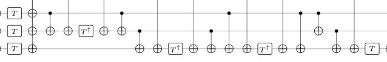
<figcaption class="paper-figure-caption"><b>Fig 1.</b> Figure 2: The 6m + 1 construction, drawn at m = 2: bracketing the second block onto a qubit of the first removes one gate, so the pair uses thirteen Ts where two independent blocks would use fourteen. The circuit restores its wires and implements CCZabcCCZdef (checked by simulation, Appendix L).</figcaption>
</figure>
<figure class="paper-figure-card">
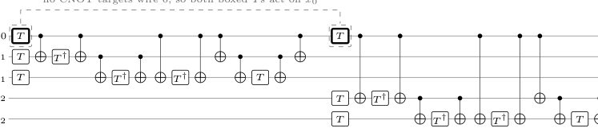
<figcaption class="paper-figure-caption"><b>Fig 2.</b> Figure 3: How sharing lowers the T-count. Two CCZ blocks both act on wire 0, and their circuits run one after the other. Each block places one of its Ts on wire 0 itself. Wire 0 is only ever a CNOT control, so it carries x0 throughout and the two boxed Ts act on the same parity. They combine into S, a Clifford gate, and the pair is removed.</figcaption>
</figure>
<figure class="paper-figure-card">
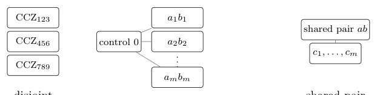
<figcaption class="paper-figure-caption"><b>Fig 3.</b> Figure 4: Sharing qubits interpolates the cost of a CCZ layer, and the radical dimension measures the position of a layer in that interpolation. Disjoint blocks give d = 0 on n = 3m qubits and cost 6m + 1 (Theorem 40). Fanning every block out of one shared control keeps d = 0 but drops n to 2m + 1, so the cost falls to exactly 4m + 3 (Theorem 43); each single-qubit merge saves two T-gates (Corollary 45). Sharing a full pair sends d to n −3, and the layer is Clifford-equivalent to a single gate, δ = 7, for every m (Remark 49).</figcaption>
</figure>
<figure class="paper-figure-card">
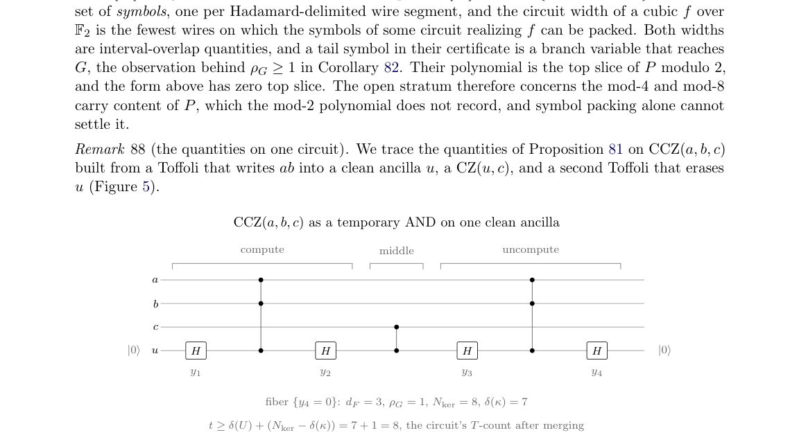
<figcaption class="paper-figure-caption"><b>Fig 4.</b> Figure 5: The standard ancilla-based CCZ circuit, built from a temporary AND on one clean ancilla, with the quantities of Remark 88.</figcaption>
</figure>
<figure class="paper-figure-card">
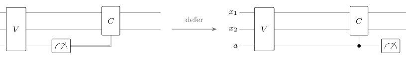
<figcaption class="paper-figure-caption"><b>Fig 5.</b> Figure 6: Dilation. Left, the outcome of measuring a selects a correction C. Right, the measurement is deferred and C becomes controlled-C, one Clifford level higher.</figcaption>
</figure>
</div>
<p><strong>Summary.</strong> This paper provides a rigorous proof establishing the exact minimum T-gate count required for implementing layers of CCZ gates in fault-tolerant quantum computation. It introduces and utilizes the 'isotropy floor' as a powerful mathematical tool to derive these lower bounds. The work is significant because it establishes optimality for general layer sizes, advancing the theoretical understanding of quantum circuit resource costs.</p>
<p><strong>Why it may be interesting.</strong> While focused on gate complexity, the rigorous mathematical techniques used to derive resource bounds (like the isotropy floor) are highly relevant to understanding the resource scaling in complex quantum simulations or quantum error correction codes.</p>
<details>
<summary>Detailed structure</summary>
<p><strong>Main problem.</strong> The paper aims to determine the minimum T-count, which is the dominant cost, for implementing fault-tolerant Clifford+T quantum computations.</p>
<p><strong>Main result.</strong> It proves that a layer of $m$ disjoint CCZ gates requires exactly $6m+1$ T gates, establishing a new optimal lower bound for general $m$.</p>
<p><strong>Method.</strong> The core method involves deriving a lower bound called the 'isotropy floor' ($\delta$) by analyzing the phase polynomial of diagonal gates using isotropy constraints.</p>
<p><strong>Model / system.</strong> The study focuses on Hadamard-free Clifford+T quantum circuits utilizing clean ancillas, specifically analyzing the cost associated with parallel Toffoli layers (CCZ gates).</p>
<p><strong>Key observables.</strong> T-count ($\delta$), Isotropy Floor ($\delta$), Stabilizer Nullity ($
u$), and the phase polynomial.</p>
<p><strong>Important parameters / regimes.</strong> The bound depends on the order-$\le 3$ moments of the phase polynomial, and the results are parameterized by the number of qubits ($n$) and the layer size ($m$).</p>
<p><strong>Assumptions / limitations.</strong> The primary model assumes Hadamard-free circuits with clean ancillas; the bound is derived from an isotropy constraint on the phase polynomial.</p>
<p><strong>Figures summary.</strong> The notes mention figures summarizing the end-to-end argument for the isotropy floor, specifically showing the CCZ case yielding a T-count of 7.</p>
<p><strong>Paper structure.</strong> The paper progresses from analyzing a single gate (CCZ) to establishing general lower bounds (Isotropy Floor) using moment tensors, and then extending these results to layers of gates.</p>
</details>
<details>
<summary>Abstract</summary>
<p>The $T$-count is the dominant cost of fault-tolerant Clifford+$T$ computation. We prove that a layer of $m$ disjoint CCZ gates, the diagonal core of a parallel Toffoli layer, needs exactly $6m+1$ $T$ gates in every Hadamard-free Clifford+$T$ circuit with clean ancillas. Campbell and Howard gave the matching construction. To our knowledge this is the first proof that it is optimal for general $m$ (for $m=1$ the value $7$ is classical, and Campbell and Howard state the value $13$ at $m=2$). On every controlled unitary the same floor comes within one of their exact count, and it recovers their $4m+3$ for a fan-out of $m$ Toffolis from one control. The proof rests on an isotropy constraint: for a pure-cubic phase, the vectors recording which $T$ gates touch each qubit span a totally isotropic subspace. In general the constraint gives the isotropy floor $δ\ge2(n-d^{\ast})-r$ for every diagonal level-three gate, computed from the phase polynomial in polynomial time. The floor is never below stabilizer nullity $ν$, which equals $n-d^{\ast}$ on this class, and a separate parity argument raises it to $2ν+1$ on non-Clifford pure-cubic gates. On the output of the TODD optimizer for the $24$ benchmark circuits it completes, the floor certifies $193$ of its $311$ merged phase-polynomial blocks optimal for their Hadamard layering ($186$ to $193$ across five optimizer seeds), against $113$ for nullity. The floor also holds, under stated conditions, for circuits whose only internal Hadamards form unitarily uncomputed temporary AND blocks, while under adaptive feedforward only $t\geν$ is proved.</p>
</details>
<p><sub><a href="#top">↑ back to top</a></sub></p>

<p><a id="paper-2610.01902"></a></p>
<h3 id="exponential-quantum-advantages-for-decoded-quantum-interferometry-in-the-streaming-setting"><a href="http://arxiv.org/abs/2610.01902v1">Exponential quantum advantages for decoded quantum interferometry in the streaming setting</a></h3>
<p><strong>Authors:</strong> Kewen Wu, Guangxu Yang<br>
<strong>Type:</strong> theory · <strong>Category:</strong> quantum information and computing · <strong>PDF:</strong> <a href="https://arxiv.org/pdf/2610.01902v1">https://arxiv.org/pdf/2610.01902v1</a><br>
<strong>Analysis basis:</strong> full PDF text, analyzed in chunks</p>
<div class="figure-strip-hint">↔ Scroll figures horizontally</div>
<div class="paper-figures-scroll">
<figure class="paper-figure-card">
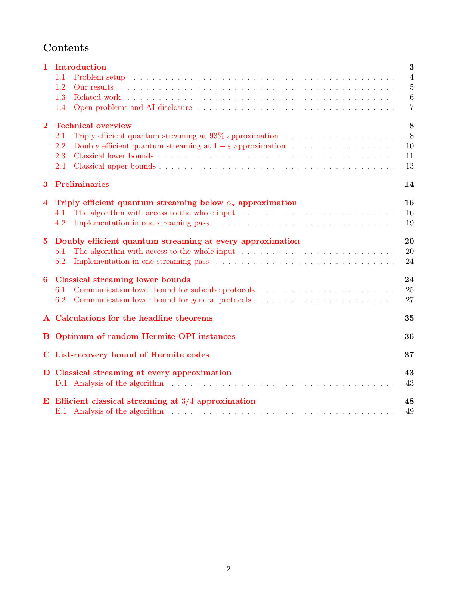
<figcaption class="paper-figure-caption"><b>Fig 1.</b> Low-resolution page preview, page 2</figcaption>
</figure>
<figure class="paper-figure-card">
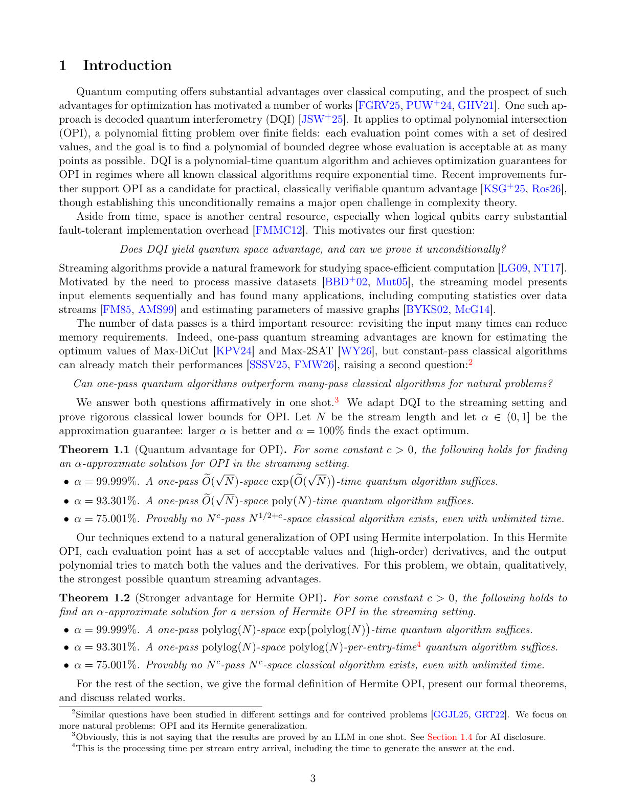
<figcaption class="paper-figure-caption"><b>Fig 2.</b> Low-resolution page preview, page 3</figcaption>
</figure>
<figure class="paper-figure-card">
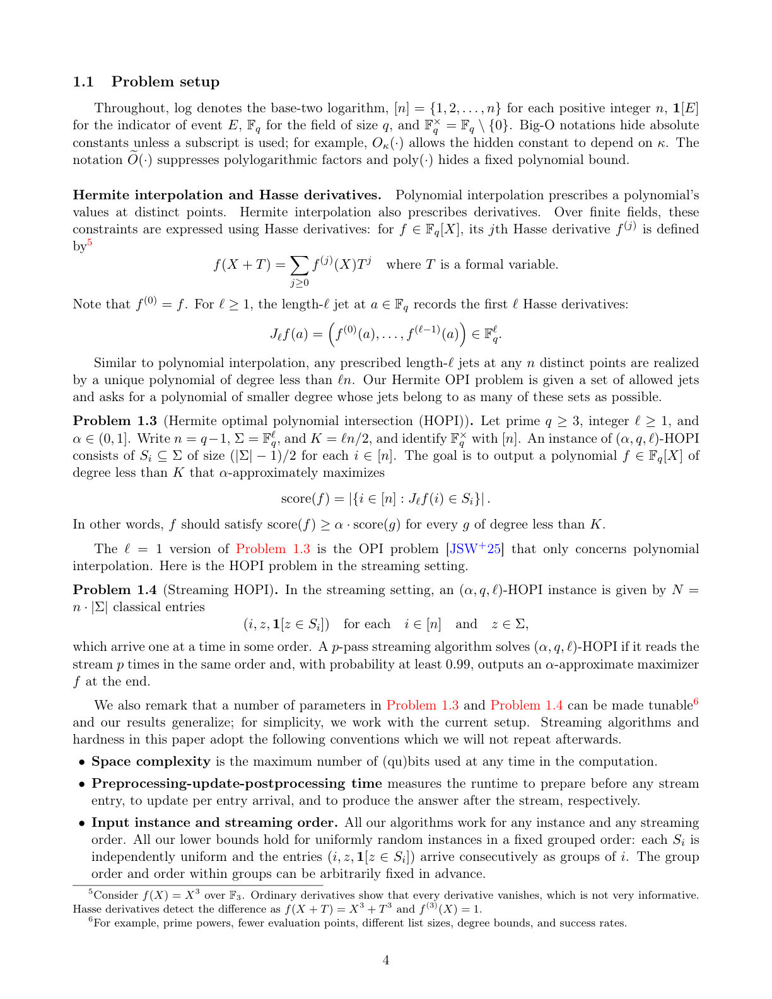
<figcaption class="paper-figure-caption"><b>Fig 3.</b> Low-resolution page preview, page 4</figcaption>
</figure>
<figure class="paper-figure-card">
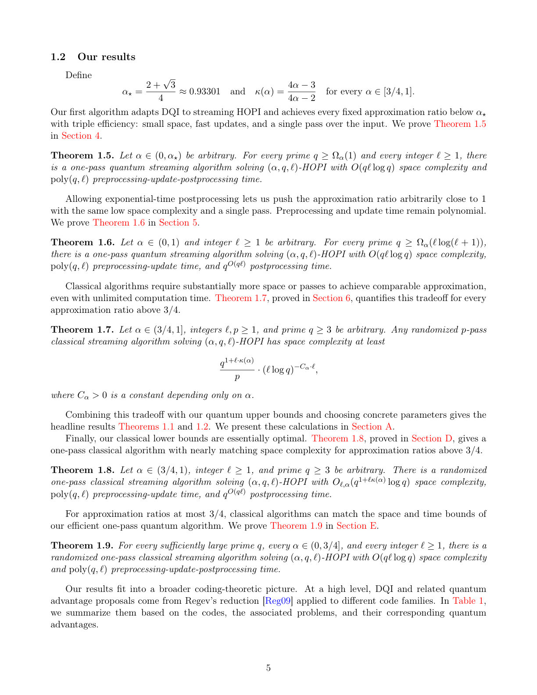
<figcaption class="paper-figure-caption"><b>Fig 4.</b> Low-resolution page preview, page 5</figcaption>
</figure>
<figure class="paper-figure-card">
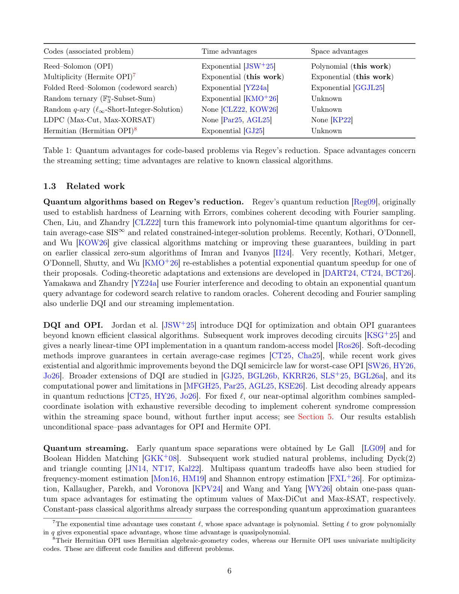
<figcaption class="paper-figure-caption"><b>Fig 5.</b> Low-resolution page preview, page 6</figcaption>
</figure>
</div>
<p><strong>Summary.</strong> This work demonstrates that Decoded Quantum Interferometry provides provable quantum advantages for solving polynomial intersection problems in the streaming setting. By analyzing the memory and time resources, the authors show that quantum algorithms can achieve high accuracy with polylogarithmic space, outperforming classical methods that require polynomial space even with unlimited time.</p>
<p><strong>Why it may be interesting.</strong> The focus on quantum advantages in resource-constrained settings (streaming, memory) is highly relevant to developing practical quantum algorithms for complex data processing tasks.</p>
<details>
<summary>Detailed structure</summary>
<p><strong>Main problem.</strong> The paper analyzes the quantum advantage of Decoded Quantum Interferometry (DQI) when applied to the Optimal Polynomial Intersection (OPI) problem in the memory-constrained streaming setting.</p>
<p><strong>Main result.</strong> It proves that DQI yields provable quantum advantages in memory for this problem, showing that quantum algorithms can achieve high approximation guarantees with polylogarithmic space, while classical counterparts require significantly more resources.</p>
<p><strong>Method.</strong> The authors establish quantum efficiency by designing one-pass quantum streaming algorithms and prove classical hardness by deriving lower bounds on the space required by classical algorithms.</p>
<p><strong>Model / system.</strong> The problem is modeled as finding a low-degree polynomial satisfying constraints (values and Hasse derivatives/jets) over a finite field $\mathbb{F}_q$, analyzed within the streaming model.</p>
<p><strong>Key observables.</strong> Approximation guarantee ($\alpha$), space complexity (qubits used), and time complexity (per stream entry).</p>
<p><strong>Important parameters / regimes.</strong> Approximation ratio $\alpha$, stream length $N$, field size $q$, and polynomial degree $\ell$.</p>
<p><strong>Assumptions / limitations.</strong> The classical lower bounds are shown to hold for uniformly random instances in a fixed grouped order.</p>
<p><strong>Figures summary.</strong> The abstract summarizes a trade-off curve comparing quantum vs. classical performance across Memory, Data passes, and Time for different approximation levels.</p>
<p><strong>Paper structure.</strong> The paper develops the theory by first establishing the quantum advantage using DQI, then deriving rigorous classical lower bounds, and finally providing a complete tradeoff curve for the tunable parameters.</p>
</details>
<details>
<summary>Abstract</summary>
<p>Decoded quantum interferometry (DQI) is a polynomial-time quantum algorithm introduced by Jordan et al. (Nature 2025). For a natural optimization problem, known as optimal polynomial intersection (OPI), it achieves approximation guarantees in regimes where all known classical algorithms require exponential time.   Besides time, space is another central resource: storing and manipulating a massive input can be very challenging, especially when logical qubits carry substantial fault-tolerant implementation overhead. This motivates the following question: does DQI yield quantum advantages in memory, and can we prove it unconditionally?   We give an affirmative answer to this question in the streaming setting. In particular, we consider a natural generalization of OPI using Hermite interpolation and Hasse derivatives, which asks for a low-degree polynomial satisfying as many constraints on its values and derivatives as possible. As a concrete example, we show   [Quantum efficiency.] An adaptation of the DQI algorithm produces a polynomial satisfying $93\%$ of the constraints; moreover, it only reads the input stream in one pass, uses polylogarithmic space, and has polylogarithmic computation time per stream entry.   [Classical hardness.] Any classical algorithm that produces an answer satisfying just $76\%$ of the constraints requires polynomial space, even if it can read the input stream with polynomially many passes and can use unlimited time.   Our result provides a complete tradeoff curve for the tunable parameters, and implies that DQI has provable quantum advantages for the original OPI problem.</p>
</details>
<p><sub><a href="#top">↑ back to top</a></sub></p>

<p><a id="paper-2610.00469"></a></p>
<h3 id="factor-code-networks"><a href="http://arxiv.org/abs/2610.00469v1">Factor Code Networks</a></h3>
<p><strong>Authors:</strong> Abhisek Sahu, Jeremy van der Heijden, Mark Van Raamsdonk, Rana Zibakhsh<br>
<strong>Type:</strong> theory · <strong>Category:</strong> quantum information and computing · <strong>PDF:</strong> <a href="https://arxiv.org/pdf/2610.00469v1">https://arxiv.org/pdf/2610.00469v1</a><br>
<strong>Analysis basis:</strong> full PDF text, analyzed in chunks</p>
<div class="figure-strip-hint">↔ Scroll figures horizontally</div>
<div class="paper-figures-scroll">
<figure class="paper-figure-card">
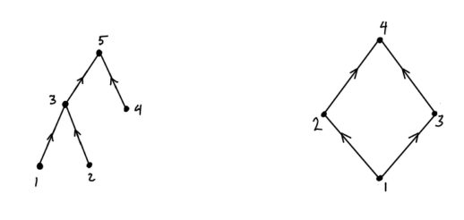
<figcaption class="paper-figure-caption"><b>Fig 1.</b> Figure 1: Hasse diagrams for code networks. Each vertex corresponds to a Hilbert space and each</figcaption>
</figure>
<figure class="paper-figure-card">
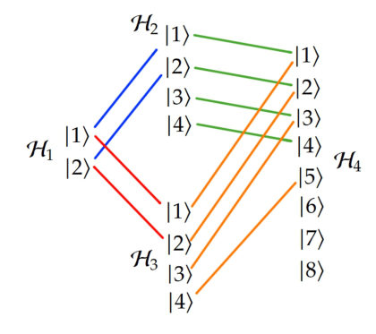
<figcaption class="paper-figure-caption"><b>Fig 2.</b> Figure 2: A set of isometries for Hilbert spaces of dimensions 2,4,4, and 8. These isometries cannot be</figcaption>
</figure>
<figure class="paper-figure-card">
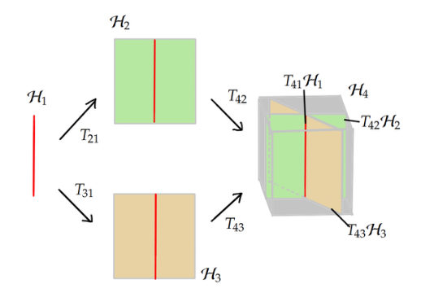
<figcaption class="paper-figure-caption"><b>Fig 3.</b> Figure 3: Hilbert spaces and isometries for a diamond-shaped Hasse diagram. The isometries can be</figcaption>
</figure>
</div>
<p><strong>Summary.</strong> This paper develops the mathematical theory of 'factor code networks,' generalizing quantum error-correcting codes to structured networks. It determines the precise algebraic and geometric conditions—such as dimension divisibility or specific angle multiplicities—required for these networks to be consistently defined by compatible operator maps. This work is crucial for understanding the structure of quantum information encoded across complex, hierarchical physical systems.</p>
<p><strong>Why it may be interesting.</strong> The rigorous mathematical framework developed for factor code networks provides powerful tools for analyzing tensor network structures arising in quantum gravity or quantum field theory, linking algebraic consistency to geometric constraints.</p>
<details>
<summary>Detailed structure</summary>
<p><strong>Main problem.</strong> The paper characterizes the conditions under which a general quantum code network, defined by isometries on a partially ordered set, can be promoted to a consistent 'factor code network' via compatible unital operator maps.</p>
<p><strong>Main result.</strong> Promotion is possible for tree structures if dimension divisibility holds, but for more complex geometries like diamond networks, it requires specific geometric conditions related to the multiplicities of principal angles between subspaces.</p>
<p><strong>Method.</strong> The authors use abstract algebra, von Neumann algebras, and geometric analysis involving principal angles to establish necessary and sufficient conditions for the existence of the required commuting operator maps.</p>
<p><strong>Model / system.</strong> The model is a quantum code network, which generalizes quantum error-correcting codes by indexing the structure over a partially ordered set. The core mathematical objects are isometries $T_{ji}$ and the associated operator maps $\varphi_{ji}$.</p>
<p><strong>Key observables.</strong> Principal angles between subspaces ($T_{42}H_2$ and $T_{43}H_3$), and the algebraic structure of the generated von Neumann factor subalgebras ($\mathcal{M}$).</p>
<p><strong>Important parameters / regimes.</strong> The ratio of Hilbert space dimensions ($\dim H_{	ext{phys}} / \dim H_{	ext{code}}$) must be an integer for a factor code.</p>
<p><strong>Assumptions / limitations.</strong> The analysis assumes finite-dimensional Hilbert spaces, allowing the use of matrix algebra and von Neumann factor theory.</p>
<p><strong>Figures summary.</strong> Figures illustrate Hasse diagrams for code networks, showing examples of structures that either satisfy or fail the promotion criteria, particularly for diamond-shaped networks.</p>
<p><strong>Paper structure.</strong> The paper first defines factor codes and code networks, then develops characterizations for the maps ($\varphi$). It proceeds by analyzing specific network topologies: tree structures, diamond-shaped networks, and general conditions for commuting/intersecting subalgebras.</p>
</details>
<details>
<summary>Abstract</summary>
<p>For a quantum code defined by an isometry $T:H_{\rm code} \to H_{\rm phys}$, an operator map is a *-homomorphism $\varphi: B(H_{\rm code}) \to B(H_{\rm phys})$ from the space of operators on the logical Hilbert space to the space of operators on the physical Hilbert space satisfying $\varphi({\cal O}) T = T {\cal O}$ for every operator ${\cal O}$ on $H_{\rm code}$. This can additionally be taken to be unital $\varphi(I_{code}) = I_{phys}$ if and only if $\dim H_{\rm code}$ divides $\dim H_{\rm phys}$. In this case, $\varphi(B(H_{\rm code})$ is a von Neumann factor subalgebra of $B(H_{\rm phys})$ and we call the pair $(T,\varphi)$ a {\it factor code}.   A code network is a family of Hilbert spaces $\{{\cal H}_i\}$ indexed by a partially ordered set with isometries $T_{ji}:{\cal H}_i \to {\cal H}_j$ for $i < j$ satisfying $T_{kj} T_{ji} = T_{ki}$ for $i < j < k$. In this paper, we ask when this can be promoted to a {\it factor code network} by defining unital operator maps $\varphi_{ji}$ so that $(T_{ji}, \varphi_{ji})$ is a factor code and $\varphi_{kj} \varphi_{ji} = \varphi_{ki}$. We show that the divisibility conditions on Hilbert space dimensions are sufficient for any code network with a tree structure but not in general. For a diamond-shaped network, we show that promotion is possible if and only if the principle angles between $T_{42} H_2$ and $T_{43} H_3$ all have multiplicity divisible by $H_1$.   For incomparable $i_1,i_2 < j$, we characterize when $\varphi_{j i_1} (B(H_{i_1}))$ and $\varphi_{j i_2} (B(H_{i_2}))$ commute, when they generate all of $B(H_j)$, and when they intersect only on multiples of the identity. For $i < j_1,j_2 < k$, we characterize when $\varphi_{k j_1} (B(H_{j_1})) \cap \varphi_{k j_2} (B(H_{j_2})) = \varphi_{k i} (B(H_{i}))$ and when these algebras together with $B(H_k)$ form a nondegenerate commuting square.</p>
</details>
<p><sub><a href="#top">↑ back to top</a></sub></p>

<p><a id="paper-2610.01874"></a></p>
<h3 id="fourier-symmetrization-for-geometric-quantum-machine-learning"><a href="http://arxiv.org/abs/2610.01874v1">Fourier Symmetrization for Geometric Quantum Machine Learning</a></h3>
<p><strong>Authors:</strong> Letao Wang, Abdel Lisser, Sreejith Sreekumar, Zeno Toffano<br>
<strong>Type:</strong> both · <strong>Category:</strong> disordered systems and neural networks · <strong>PDF:</strong> <a href="https://arxiv.org/pdf/2610.01874v1">https://arxiv.org/pdf/2610.01874v1</a><br>
<strong>Analysis basis:</strong> full PDF text, analyzed in chunks</p>
<div class="figure-strip-hint">↔ Scroll figures horizontally</div>
<div class="paper-figures-scroll">
<figure class="paper-figure-card">
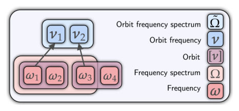
<figcaption class="paper-figure-caption"><b>Fig 1.</b> FIG. 1. Illustration of the orbit notation. The original fre- quency spectrum is Ω= {ω1, ω2, ω3}, and the average opera- tor completes the orbit by adding ω4 /∈Ω. The frequencies ω1 and ω2 belong to one orbit, while ω3 and ω4 belong to another orbit. We choose ν1 and ν2 as orbit frequencies representing ω1 and ω3, respectively, so the two orbits are denoted by [ν1] and [ν2]. The orbit frequencies ν1 and ν2 together form the orbit frequency spectrum ˜Ω.</figcaption>
</figure>
<figure class="paper-figure-card">
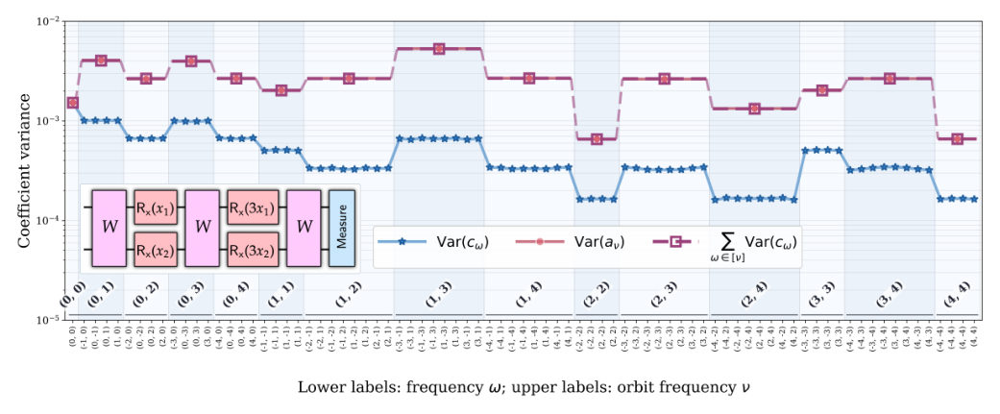
<figcaption class="paper-figure-caption"><b>Fig 2.</b> FIG. 2. Fourier coefficient variances reorganized into frequency orbits with respect to the hyperoctahedral group under the exact 2-design assumption. The circuit in the lower left is the QFM used in this numerical example, and its output is obtained by measuring the global observable ˆO = (|0⟩⟨0|)⊗2. The x-axis uses two rows of labels: the lower row lists the original frequencies ω, and the upper row labels each orbit by its orbit frequency ν. For example, under the coordinate permutations and independent sign flips in the hyperoctahedral group, the orbit frequency (0, 1) represents the orbit containing frequencies (−1, 0), (0, −1), (0, 1), and (1, 0). The blue curve shows the variance of...</figcaption>
</figure>
<figure class="paper-figure-card">
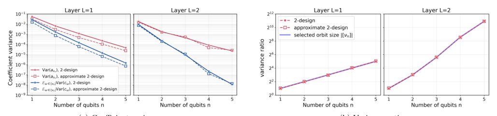
<figcaption class="paper-figure-caption"><b>Fig 3.</b> FIG. 3. Fourier coefficient variance analysis for exponential encoding QFMs. We consider an n-qubit, n-variable QFM under the hyperoctahedral group Bn, with L = 1 or L = 2. The l-th encoding layer is Nn j=1 RZ(3l−1xj), and the output is obtained by measuring the local observable ˆOL defined in Eq. (38). Each trainable layer uses five repetitions of the Strongly Entangling Ansatz for the exact 2-design reference and one repetition for the ε-approximate 2-design setting. The variances are estimated from 104 random parameter samples. For L = 1, we select νn = (1, . . . , 1). For L = 2, we select νn = (1, . . . , n) for n = 1, 2, 3, 4 and ν5 = (1, 1, 2, 3, 4). (a) Red curves show Var(aνn), and...</figcaption>
</figure>
<figure class="paper-figure-card">
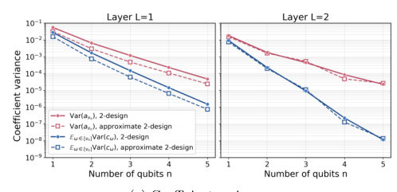
<figcaption class="paper-figure-caption"><b>Fig 4.</b> Figure 3b shows the corresponding variance ratio to- gether with the selected orbit size. For L = 1, the ratio in the exact 2-design setting nearly coincides with the se- lected orbit size, numerically confirming Eq. (27) in The- orem 8. The ratio in the ε-approximate 2-design setting also nearly coincides with the selected orbit size, indi- cating that the cross covariance terms are small for the ansatz considered. For L = 2, the ratios in both settings also remain close to the selected orbit size. Although Theorem 11 is restricted to L = 1, this observation sug- gests that the same variance gain may persist for practi- cal ansatzes with L &gt; 1 and continue to mitigate vanish- ing...</figcaption>
</figure>
<figure class="paper-figure-card">
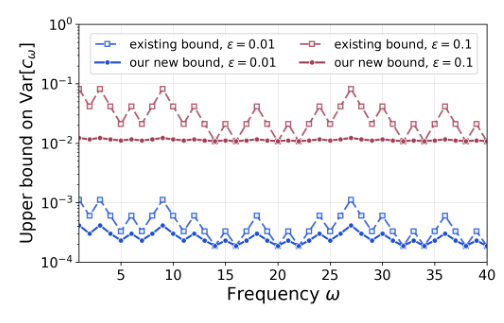
<figcaption class="paper-figure-caption"><b>Fig 5.</b> FIG. 4. Comparison between the existing ε-approximate 2- design bound in Eq. (40) and the bound in Corollary 12. Dashed curves show the existing bound, and solid curves show our bound.</figcaption>
</figure>
</div>
<p><strong>Summary.</strong> This work develops a rigorous framework for incorporating symmetry into Quantum Fourier Models (QFMs) for machine learning. By analyzing the Fourier spectrum, the authors derive tight bounds showing how symmetry constrains model expressivity. They validate this approach by demonstrating that symmetry-aware QPINNs achieve superior accuracy when solving complex physical PDEs.</p>
<p><strong>Why it may be interesting.</strong> The explicit connection between group theory (symmetry), spectral analysis (Fourier decomposition), and physical modeling (PDEs) provides a powerful, structured inductive bias for quantum machine learning applied to physical systems.</p>
<details>
<summary>Detailed structure</summary>
<p><strong>Main problem.</strong> The paper addresses how symmetry constrains and shapes the expressivity of Quantum Fourier Models (QFMs) used in Geometric Quantum Machine Learning (GQML). It seeks to provide rigorous theoretical bounds on the performance of symmetry-enforced models.</p>
<p><strong>Main result.</strong> Randomized encoding, which avoids deep circuits, achieves the lowest mean errors when using QPINNs to solve 2D PDEs like the screened Poisson and Hamilton-Jacobi equations.</p>
<p><strong>Method.</strong> The authors use Fourier analysis to decompose symmetry-invariant QFMs, deriving tight theoretical bounds on coefficient variances by analyzing the deviation from ideal 2-design assumptions.</p>
<p><strong>Model / system.</strong> The model is a Quantum Fourier Model (QFM) used as a Quantum Physics-Informed Neural Network (QPINN) to solve continuous Partial Differential Equations (PDEs) in 2D space.</p>
<p><strong>Key observables.</strong> Mean error in solving PDEs (Screened Poisson, Stationary Viscous Hamilton-Jacobi), and the variance of symmetrized Fourier coefficients.</p>
<p><strong>Important parameters / regimes.</strong> The approximation parameter $\epsilon$, the size of the symmetry group, and the dimensionality of the PDEs (2D).</p>
<p><strong>Assumptions / limitations.</strong> The analysis relies on the QFM viewpoint, the assumption of 2-design properties for trainable layers, and the use of randomized encoding to implement symmetry invariance without deep circuits.</p>
<p><strong>Figures summary.</strong> Not specified, but the notes reference figures illustrating Fourier orbit decomposition and the comparison of various QPINN performance metrics.</p>
<p><strong>Paper structure.</strong> The paper progresses from defining the symmetry problem in QFMs, developing the Fourier orbit decomposition theory, deriving tight mathematical bounds on coefficient variances, and finally validating the approach by applying it to solve specific 2D PDEs using randomized encoding.</p>
</details>
<details>
<summary>Abstract</summary>
<p>Geometric quantum machine learning incorporates symmetry into quantum models, but how symmetry shapes their expressivity and guides effective model design remains insufficiently understood. We address this question through the Fourier representation of quantum Fourier models (QFMs). Symmetry organizes the frequency spectrum into orbits and sums the Fourier coefficients within each orbit into a symmetrized coefficient. When QFM trainable layers form independent exact 2-designs, the variance of each symmetrized coefficient equals the sum of the coefficient variances in its orbit. For single-layer QFMs with $\varepsilon$-approximate 2-design trainable layers, we bound the deviation from this identity. The resulting bound for individual Fourier coefficients can be exponentially tighter than an existing bound. The hyperoctahedral group provides an example of orbit growth that can mitigate vanishing expressivity of the symmetrized coefficients. Symmetrization of QFMs over an elementary abelian 2-group also yields pure multivariate Chebyshev polynomial basis functions. We introduce randomized encoding, which implements invariant models without ancilla qubits or the additional circuit depth for quantum twirling. We evaluate the models as quantum physics-informed neural networks (QPINNs) on two-dimensional screened Poisson and stationary viscous Hamilton-Jacobi equations. Under hard boundary constraints, QPINNs using exact symmetrization and randomized encoding achieve the lowest mean errors in the two benchmarks, respectively.</p>
</details>
<p><sub><a href="#top">↑ back to top</a></sub></p>

<p><a id="paper-2610.02176"></a></p>
<h3 id="from-permutation-symmetry-to-communication-bounds-and-additivity"><a href="http://arxiv.org/abs/2610.02176v1">From Permutation Symmetry to Communication Bounds and Additivity</a></h3>
<p><strong>Authors:</strong> Zahra Baghali Khanian, Debbie Leung, Graeme Smith<br>
<strong>Type:</strong> theory · <strong>Category:</strong> quantum information and computing · <strong>PDF:</strong> <a href="https://arxiv.org/pdf/2610.02176v1">https://arxiv.org/pdf/2610.02176v1</a><br>
<strong>Analysis basis:</strong> full PDF text, analyzed in chunks</p>
<div class="figure-strip-hint">↔ Scroll figures horizontally</div>
<div class="paper-figures-scroll">
<figure class="paper-figure-card">
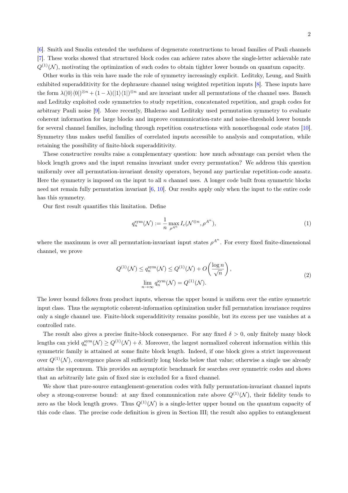
<figcaption class="paper-figure-caption"><b>Fig 1.</b> Low-resolution page preview, page 2</figcaption>
</figure>
<figure class="paper-figure-card">
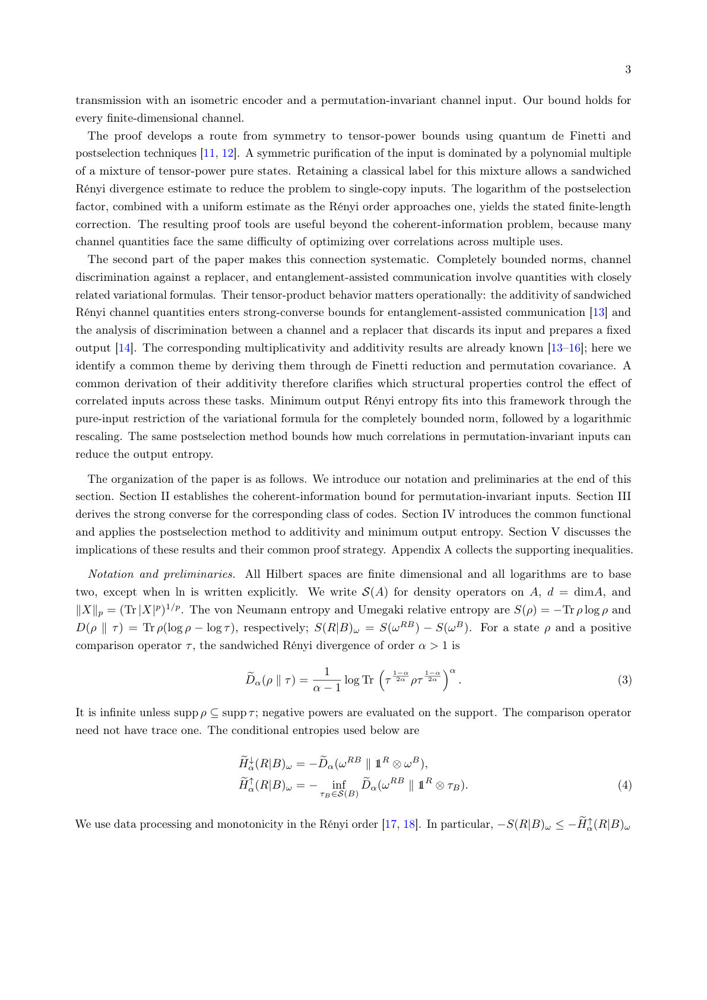
<figcaption class="paper-figure-caption"><b>Fig 2.</b> Low-resolution page preview, page 3</figcaption>
</figure>
<figure class="paper-figure-card">
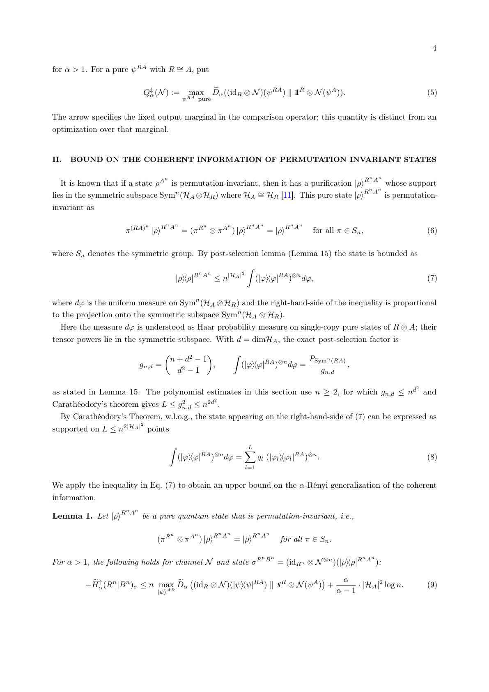
<figcaption class="paper-figure-caption"><b>Fig 3.</b> Low-resolution page preview, page 4</figcaption>
</figure>
<figure class="paper-figure-card">
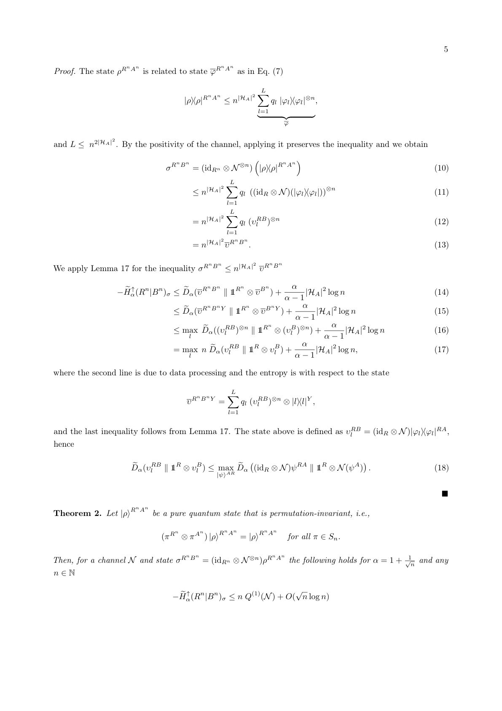
<figcaption class="paper-figure-caption"><b>Fig 4.</b> Low-resolution page preview, page 5</figcaption>
</figure>
<figure class="paper-figure-card">
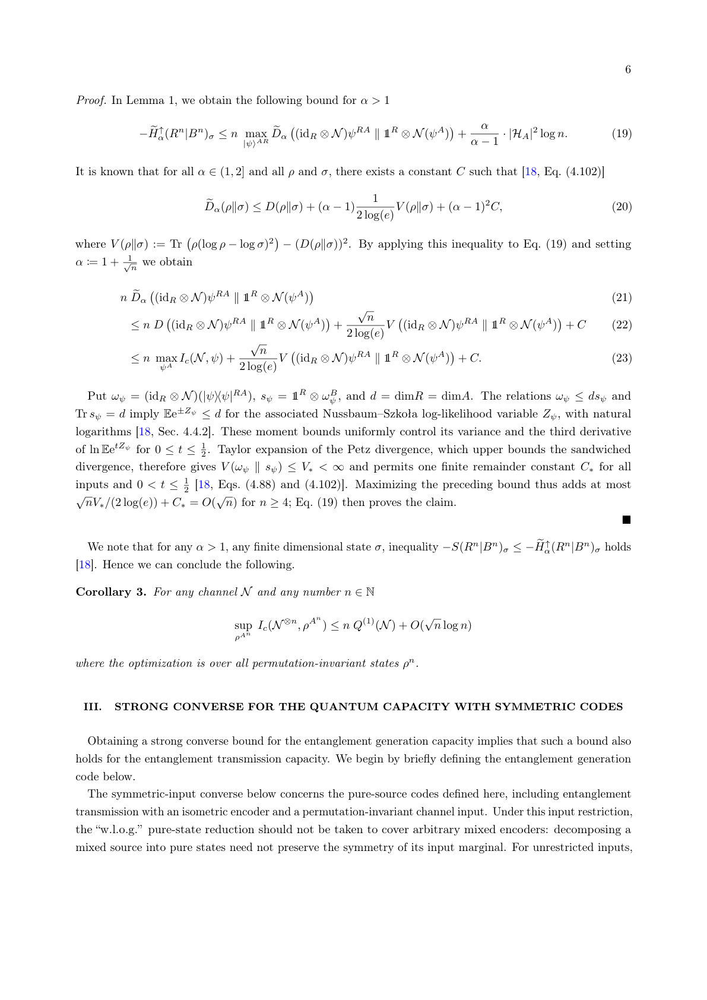
<figcaption class="paper-figure-caption"><b>Fig 5.</b> Low-resolution page preview, page 6</figcaption>
</figure>
</div>
<p><strong>Summary.</strong> This work analyzes the quantum capacity of quantum channels, focusing on the role of input symmetry. It proves that when inputs are permutation-invariant, the advantage gained from using many channel uses asymptotically vanishes, reducing the problem to the single-use capacity. The paper establishes deep structural links between additivity properties for various quantum information measures.</p>
<p><strong>Why it may be interesting.</strong> It provides rigorous mathematical bounds on the fundamental limits of quantum communication, showing how symmetry constraints can simplify complex asymptotic problems, which is crucial for understanding resource theories in quantum optics and computation.</p>
<details>
<summary>Detailed structure</summary>
<p><strong>Main problem.</strong> The paper investigates the quantum capacity of memoryless quantum channels, specifically determining whether correlations across multiple channel uses (superadditivity) provide an asymptotic advantage over single-use performance.</p>
<p><strong>Main result.</strong> Under the constraint of full permutation invariance on the input state, the asymptotic quantum capacity per use converges to the single-use coherent information maximum, implying that finite-block superadditivity effects vanish in the limit.</p>
<p><strong>Method.</strong> The authors employ advanced quantum information theory tools, including analyzing the convergence of normalized coherent information, utilizing de Finetti reduction, and establishing common variational frameworks for various channel divergences.</p>
<p><strong>Model / system.</strong> The analysis is performed on finite-dimensional memoryless quantum channels ($N$) acting on quantum states, with a specific focus on inputs that are permutation-invariant across multiple uses.</p>
<p><strong>Key observables.</strong> Quantum capacity ($Q(N)$), coherent information ($I_c$), sandwiched Rényi divergence ($eD_\alpha$), and minimum output Rényi entropy ($h_\alpha$).</p>
<p><strong>Important parameters / regimes.</strong> The block length $n$, the Rényi order $\alpha > 1$, and the single-use channel capacity $Q_1(N)$.</p>
<p><strong>Assumptions / limitations.</strong> The results are strongly conditioned on the input state being fully permutation-invariant across all $n$ channel uses.</p>
<p><strong>Paper structure.</strong> The paper systematically analyzes the convergence of quantum information measures (like coherent information and channel divergences) from finite blocks ($n$) to the asymptotic limit ($n 	o \infty$), showing how permutation symmetry constrains the achievable rates and establishes structural connections between additivity results.</p>
</details>
<details>
<summary>Abstract</summary>
<p>Correlations across channel uses can improve quantum communication rates, making optimization over arbitrarily large blocks a central difficulty in determining quantum capacity. We show how full permutation invariance limits this advantage for every finite-dimensional memoryless channel. The optimized coherent information per use converges to the single-use maximum and consequently attains its supremum at a finite block length. Thus finite-block superadditivity remains possible, while the asymptotic optimization reduces to a single channel use. We also establish a strong converse for pure-source entanglement generation with permutation-invariant inputs: at any fixed rate above the single-use coherent-information maximum, the fidelity tends to zero. Beyond these communication bounds, we identify a common structure underlying completely bounded norms and the sandwiched Rényi channel quantities governing discrimination against a replacer and entanglement-assisted communication. De Finetti reduction and permutation covariance yield systematic alternative proofs of their known multiplicativity and additivity results within a shared variational framework. We further show that, for permutation-invariant inputs, correlations cannot sustain an asymptotic reduction in output entropy per use below the single-use minimum. This entropy limit holds for Rényi orders greater than one and for the von Neumann entropy, extending the role of symmetry from communication bounds to the control of output entropy.</p>
</details>
<p><sub><a href="#top">↑ back to top</a></sub></p>

<p><a id="paper-2610.00865"></a></p>
<h3 id="from-steane-to-a7-quantum-codes-from-invariant-states"><a href="http://arxiv.org/abs/2610.00865v1">From Steane to A7: Quantum Codes from Invariant States</a></h3>
<p><strong>Authors:</strong> Ian Teixeira<br>
<strong>Type:</strong> theory · <strong>Category:</strong> quantum information and computing · <strong>PDF:</strong> <a href="https://arxiv.org/pdf/2610.00865v1">https://arxiv.org/pdf/2610.00865v1</a><br>
<strong>Analysis basis:</strong> full PDF text, analyzed in chunks</p>
<div class="figure-strip-hint">↔ Scroll figures horizontally</div>
<div class="paper-figures-scroll">
<figure class="paper-figure-card">
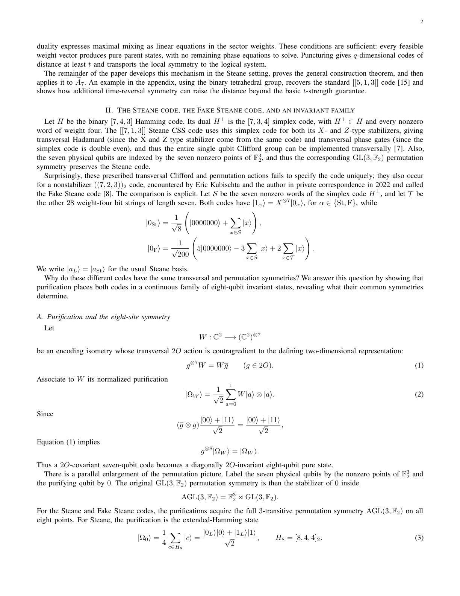
<figcaption class="paper-figure-caption"><b>Fig 1.</b> Low-resolution page preview, page 2</figcaption>
</figure>
<figure class="paper-figure-card">
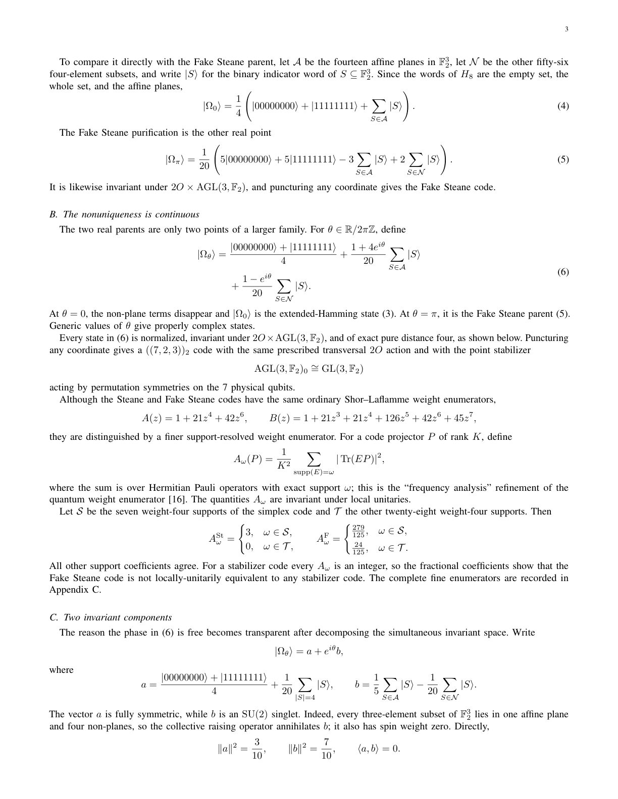
<figcaption class="paper-figure-caption"><b>Fig 2.</b> Low-resolution page preview, page 3</figcaption>
</figure>
<figure class="paper-figure-card">
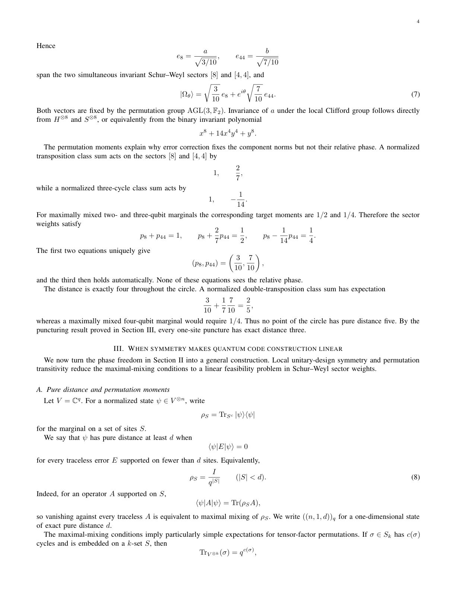
<figcaption class="paper-figure-caption"><b>Fig 3.</b> Low-resolution page preview, page 4</figcaption>
</figure>
<figure class="paper-figure-card">
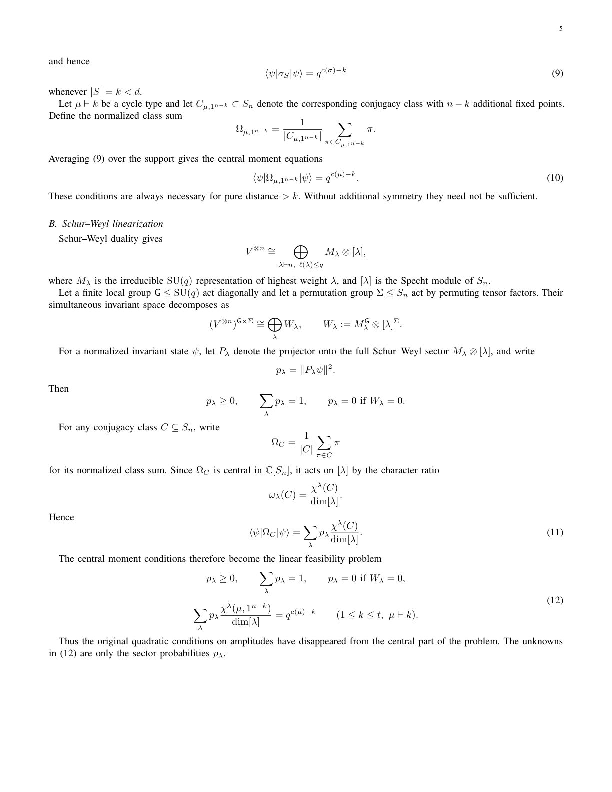
<figcaption class="paper-figure-caption"><b>Fig 4.</b> Low-resolution page preview, page 5</figcaption>
</figure>
<figure class="paper-figure-card">
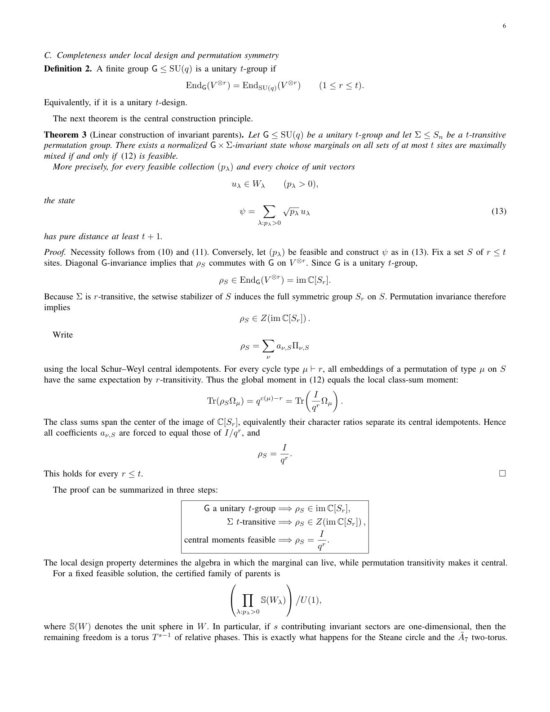
<figcaption class="paper-figure-caption"><b>Fig 5.</b> Low-resolution page preview, page 6</figcaption>
</figure>
</div>
<p><strong>Summary.</strong> This paper develops a powerful method to construct quantum error-correcting codes by analyzing invariant states derived from symmetry constraints. It successfully constructs a new two-parameter family of seven-ququart codes with $ ilde{A}_7$ symmetry, extending beyond previously known codes like the Steane code.</p>
<p><strong>Why it may be interesting.</strong> The rigorous mathematical framework connecting symmetry constraints (like $  ilde{A}_7$) to the existence and parameters of quantum codes is highly relevant for designing fault-tolerant quantum computation protocols.</p>
<details>
<summary>Detailed structure</summary>
<p><strong>Main problem.</strong> The paper aims to construct quantum error-correcting codes with specific transversal symmetries, particularly $   ilde{A}_7$, realizing the finite component of a two-qubit super-golden gate set.</p>
<p><strong>Main result.</strong> A two-parameter family of single-error-correcting seven-ququart codes, $((7, 4, 3))_4$, is constructed, showing that the Steane and Fake Steane codes are specific points within this continuous family.</p>
<p><strong>Method.</strong> The construction method involves building invariant parent states by solving linear equations derived from Schur-Weyl sector weights, rather than searching directly for the codespace.</p>
<p><strong>Model / system.</strong> The system is a quantum error-correcting code defined on ququart systems, analyzed using invariant states in the tensor product space $V \otimes n$ under the combined action of local unitary-design symmetry ($G \le SU(q)$) and permutation symmetry ($\Sigma \le S_n$).</p>
<p><strong>Key observables.</strong> Code parameters $((7, 4, 3))_4$, the continuous parameter $   heta$, and the sector weights $(p_8, p_{44})$ determined by moment equations.</p>
<p><strong>Important parameters / regimes.</strong> The local dimension $q=4$, the number of sites $n=7$ (for the code), and the symmetry group $ ilde{A}_7 \le SU(4)$.</p>
<p><strong>Assumptions / limitations.</strong> The method relies on the equivalence between maximal mixing of marginals on $\le t$ sites and the feasibility of a linear system in Schur-Weyl sector weights.</p>
<p><strong>Figures summary.</strong> The notes mention TABLE I comparing the Steane and $   ilde{A}_7$ families, and Equation (15) providing the unique solution for the sector weights in the $    ilde{A}_7$ case.</p>
<p><strong>Paper structure.</strong> The paper develops the general theory by relating code construction to linear feasibility problems in Schur-Weyl weights. It then applies this theory to the specific case of $    ilde{A}_7$ symmetry, showing how the resulting parent state yields the desired two-parameter family of codes.</p>
</details>
<details>
<summary>Abstract</summary>
<p>We construct a two-parameter family of single-error-correcting seven-ququart codes with transversal $\tilde{A_7}$ symmetry, realizing the finite component of a two-qubit super-golden gate set. These $((7,4,3))_4$ codes encode two logical qubits and support non-Clifford operations by applying the same gate to each physical ququart.   Our method constructs invariant parent states rather than searching directly for a codespace. For $n$ systems of local dimension $q$, suppose the local symmetry is a unitary $t$-group and the permutation symmetry is $t$-transitive. Maximal mixing of all marginals on at most $t$ sites is then equivalent to linear equations in Schur--Weyl sector weights. Every feasible solution yields parents of pure distance at least $t+1$; puncturing one site produces a $q$-dimensional code of distance at least $t$ with the prescribed local symmetry acting transversally.   Steane and the nonstabilizer Fake Steane code reveal why the construction leaves continuous freedom. They share the same prescribed transversal Clifford and permutation symmetries, and their eight-qubit purifications lie on a circle: error correction fixes two invariant-sector norms but leaves the relative phase free. Keeping the same permutation group and replacing Clifford symmetry by $\tilde{A_7}$ $\leq SU(4)$ gives three fixed sector norms and two free relative phases, producing the new ququart family.</p>
</details>
<p><sub><a href="#top">↑ back to top</a></sub></p>

<p><a id="paper-2610.00525"></a></p>
<h3 id="good-quantum-locally-testable-codes-from-lossless-cubical-complexes"><a href="http://arxiv.org/abs/2610.00525v1">Good Quantum Locally Testable Codes from Lossless Cubical Complexes</a></h3>
<p><strong>Authors:</strong> Itay Cohen, Itai Leigh, Assaf Reiner, Amnon Ta-Shma, Elad Tzalik<br>
<strong>Type:</strong> theory · <strong>Category:</strong> quantum information and computing · <strong>PDF:</strong> <a href="https://arxiv.org/pdf/2610.00525v1">https://arxiv.org/pdf/2610.00525v1</a><br>
<strong>Analysis basis:</strong> full PDF text, analyzed in chunks</p>
<div class="figure-strip-hint">↔ Scroll figures horizontally</div>
<div class="paper-figures-scroll">
<figure class="paper-figure-card">
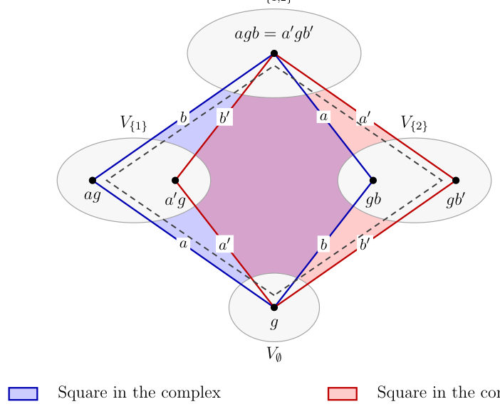
<figcaption class="paper-figure-caption"><b>Fig 1.</b> Figure 1: A left-right Cayley complex satisfying the weak completion property but not the strong one. The blue and red squares share the opposite vertices g and agb = a′gb′. The black dashed contour follows a four-cycle which is not a square in the complex.</figcaption>
</figure>
<figure class="paper-figure-card">
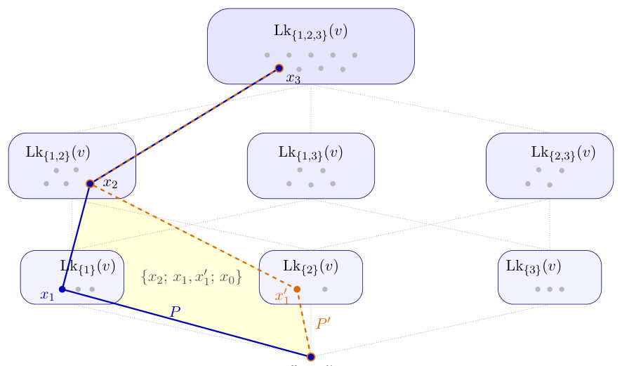
<figcaption class="paper-figure-caption"><b>Fig 2.</b> Figure 2: The link above v in a three-dimensional cubical complex. The solid path P has order (1, 2, 3), while the dashed path P ′ has order (2, 1, 3). The pale shaded quadrilateral marks the square 2-cell witnessing the adjacent switch.</figcaption>
</figure>
<figure class="paper-figure-card">
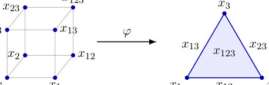
<figcaption class="paper-figure-caption"><b>Fig 3.</b> Figure 3: For a non-colliding vertex x123, the interval below it is a Boolean cube. The map φ identifies it with the face poset of the simplex on its three level-one vertices, with v corresponding to the empty face.</figcaption>
</figure>
<figure class="paper-figure-card">
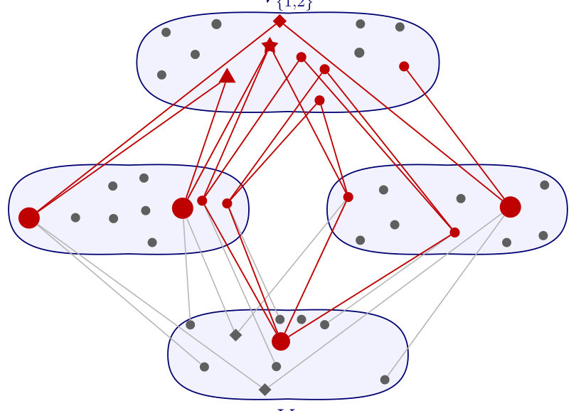
<figcaption class="paper-figure-caption"><b>Fig 4.</b> Figure 4: The four vertex sets of a two-dimensional square complex, arranged by level. An initial set of vertices H1 is marked heavy (red) on level 1. In the layer below, only vertices that have many heavy parents are heavy. In the layer above, all upward neighbors of the heavy vertices are marked heavy. Terminal vertices (heavy vertices without heavy children) are enlarged. Red vertices shaped like diamonds, stars, and triangles have excess. The excess of the triangular vertex is accounted for by Same2, whereas the excess of the diamond shaped vertex is accounted for by Light2. The excess of the star shaped vertex is accounted for by both functions.</figcaption>
</figure>
<figure class="paper-figure-card">
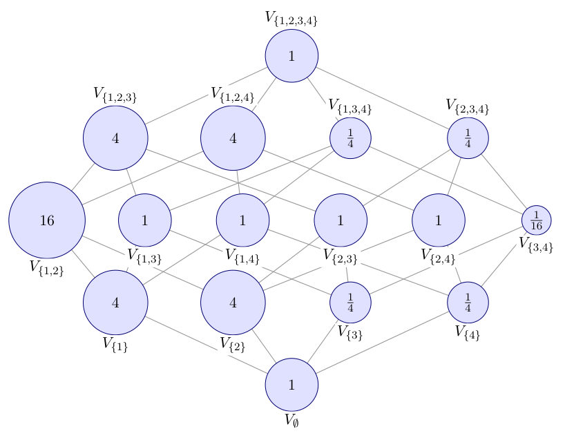
<figcaption class="paper-figure-caption"><b>Fig 5.</b> Figure 5: An illustration of the size of the blocks in the four-dimensional Boolean cube for µ1 = µ2 = 4 and µ3 = µ4 = 1</figcaption>
</figure>
</div>
<p><strong>Summary.</strong> This paper develops a theoretical framework to construct quantum locally testable codes by analyzing the properties of high-dimensional lossless cubical complexes. It establishes a local-to-global principle that links directional expansion within these complexes to the existence of good quantum codes. This advances the understanding of how combinatorial geometry can guarantee robust quantum error correction.</p>
<p><strong>Why it may be interesting.</strong> The connection between high-dimensional combinatorial structures (lossless complexes) and the existence of robust quantum error-correcting codes provides a powerful, abstract tool for designing fault-tolerant quantum computation protocols.</p>
<details>
<summary>Detailed structure</summary>
<p><strong>Main problem.</strong> Developing asymptotically good Quantum Locally Testable Codes (qLTCs) using a higher-dimensional combinatorial approach based on lossless cubical complexes.</p>
<p><strong>Main result.</strong> The existence of sufficiently imbalanced, two-sided lossless four-dimensional cubical complexes guarantees the existence of asymptotically good quantum locally testable codes.</p>
<p><strong>Method.</strong> The authors associate a high-dimensional cubical complex with a level chain complex and establish a local-to-global theorem linking directional lossless expansion to small-set coboundary expansion.</p>
<p><strong>Model / system.</strong> The model is quantum error correction, specifically constructing qLTCs. The mathematical framework involves high-dimensional lossless cubical complexes and their associated level chain complexes.</p>
<p><strong>Key observables.</strong> Code parameters such as rate, distance, and the ability to achieve local testability soundness.</p>
<p><strong>Important parameters / regimes.</strong> The dimension of the cubical complex (e.g., four-dimensional), the degree of imbalance, and the expansion properties (lossless expansion).</p>
<p><strong>Assumptions / limitations.</strong> The primary assumption is investigating the implications of the existence of the required high-dimensional lossless cubical complexes, as explicit construction is not provided.</p>
<p><strong>Figures summary.</strong> Figures illustrate the structure of complexes (e.g., left-right Cayley complex) and the application of algorithms like the Greedy Flipping Algorithm for bounding parameters.</p>
<p><strong>Paper structure.</strong> The paper builds from classical LTCs to qLTCs, formalizing the structure via level chain complexes. It develops a local-to-global principle and then analyzes the resulting code parameters, including bounding distance and presenting a linear-time decoder.</p>
</details>
<details>
<summary>Abstract</summary>
<p>Sipser and Spielman constructed LDPC codes from either bipartite \emph{spectral} expanders or one-sided \emph{lossless} expanders. In higher dimensions, \emph{spectral} expansion similarly played a central role in the constructions of asymptotically good classical LTCs and qLDPC codes by Dinur, Evra, Livne, Lubotzky, and Mozes and by Panteleev and Kalachev. Alternatively, Lin and Hsieh constructed classical LTCs and qLDPC codes from two-dimensional \emph{lossless} cubical complexes.   In this work we develop the higher-dimensional \emph{lossless} approach. We do not construct the required high-dimensional lossless cubical complexes; rather, we investigate what their existence would imply. We associate with a high-dimensional cubical complex a \emph{level chain complex}, whose chain groups are supported on the level sets of the Boolean cube rather than on its cells. Our main technical contribution is a clean local-to-global theorem for this structure: suitable one-dimensional lossless expansion in the directional graphs implies small-set coboundary expansion of the global level complex. As a consequence, sufficiently imbalanced, two-sided lossless four-dimensional cubical complexes give rise to asymptotically good quantum locally testable codes. We expect the local-to-global principle developed here to have further applications.</p>
</details>
<p><sub><a href="#top">↑ back to top</a></sub></p>

<p><a id="paper-2610.01712"></a></p>
<h3 id="in-context-learning-of-single-index-targets-comparing-kernel-and-feature-learners"><a href="http://arxiv.org/abs/2610.01712v1">In-context Learning of Single-index Targets: Comparing Kernel and Feature Learners</a></h3>
<p><strong>Authors:</strong> Haotian Gu, Yizhou Xu, Lenka Zdeborová<br>
<strong>Type:</strong> theory · <strong>Category:</strong> disordered systems and neural networks · <strong>PDF:</strong> <a href="https://arxiv.org/pdf/2610.01712v1">https://arxiv.org/pdf/2610.01712v1</a><br>
<strong>Analysis basis:</strong> full PDF text, analyzed in chunks</p>
<div class="figure-strip-hint">↔ Scroll figures horizontally</div>
<div class="paper-figures-scroll">
<figure class="paper-figure-card">
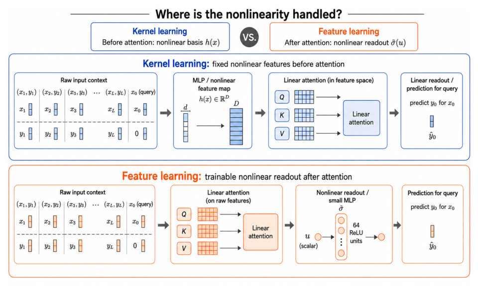
<figcaption class="paper-figure-caption"><b>Fig 1.</b> Figure 1: The kernel and feature learners. The kernel learner applies a fixed map h : Rd →RD before self-attention, whereas the feature learner applies a trainable readout bσ after self-attention.</figcaption>
</figure>
<figure class="paper-figure-card">
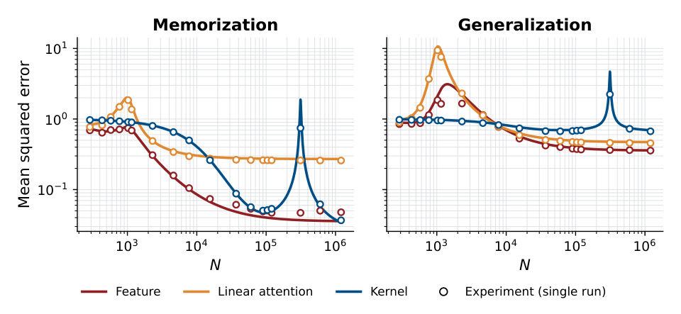
<figcaption class="paper-figure-caption"><b>Fig 2.</b> Figure 2: Memorization (left) and generalization (right) errors as a function of N. We fix N0 = 24 and L = eL = 1024. Red, orange, and blue denote the feature learner, linear attention, and the kernel learner, respectively. Solid lines show replica predictions, and circles show numerical results from a single training run. The three learners use the same training and inference prompts.</figcaption>
</figure>
<figure class="paper-figure-card">
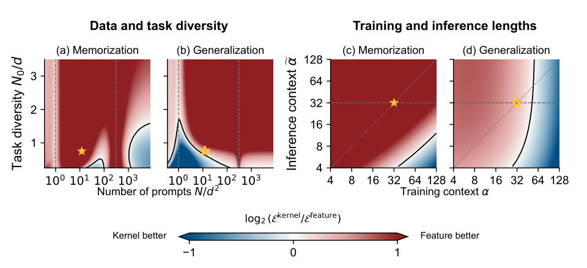
<figcaption class="paper-figure-caption"><b>Fig 3.</b> Figure 3: Replica predictions for the relative errors of the two learners. In all panels, the color shows log2(Ekernel/Efeature). (a,b) Memorization and generalization as N/d2 and N0/d vary, with α = eα = 32; vertical dashed lines mark N = d2 and N = D2. (c,d) Memorization and generalization as the training length α = L/d and inference length eα = eL/d vary, with N0 = 24 and N = 12288; the diagonal dotted line marks equal lengths, and the horizontal dashed line marks eα = 32. Gold stars mark the shared parameter setting (N = 12288, N0 = 24, α = eα = 32). Blue favors the kernel learner, red favors the feature learner, and black curves indicate equal errors.</figcaption>
</figure>
<figure class="paper-figure-card">
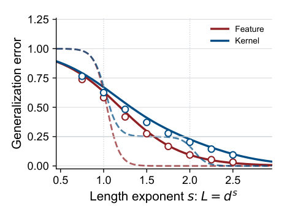
<figcaption class="paper-figure-caption"><b>Fig 4.</b> Figure 4: Learning different harmonic degrees. The horizontal coordinate is s = log L/ log d, with equal training and inference lengths L = eL = ds. The teacher is (24). Circles show experiments at d = 16, N0 = 8192, N = 1200000, ∆= 0, and λ = 0. Solid curves are Theorem 1 (Eqs. (20) and (21)) evaluated at d = 16. Dashed curves are the same formulas evaluated at d = 106 and display the separation be- tween the scales L ≍d and L ≍d2.</figcaption>
</figure>
<figure class="paper-figure-card">
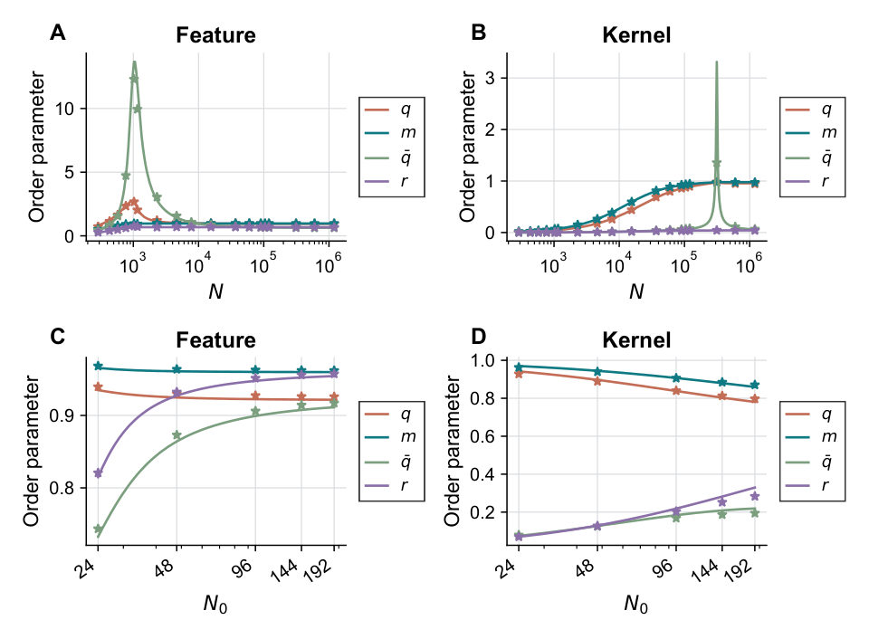
<figcaption class="paper-figure-caption"><b>Fig 5.</b> Figure 5: Consistency of the replica method with numerical experiments. Left: feature learner; right: kernel learner. The upper row varies N at d = 32, and the lower row varies N0 at d = 24, N = 1200000. Solid lines are replica predictions, and stars show the order parameters measured from the learned attention matrices in one run. Red, teal, green, and purple denote q, m, ¯q, r, respectively, for the learner in that column.</figcaption>
</figure>
</div>
<p><strong>Summary.</strong> This theoretical paper compares the performance of two attention-based architectures, the Kernel Learner and the Feature Learner, for performing nonlinear In-context Learning. Using advanced statistical physics techniques like the replica method, the authors derive phase diagrams that predict which architecture performs better based on system parameters. The work clarifies how architectural choices govern the ability of large models to learn tasks from limited demonstrations.</p>
<p><strong>Why it may be interesting.</strong> The rigorous mathematical comparison of different learning architectures in the context of deep learning models (Transformers) provides theoretical insights into how model structure interacts with data statistics, which is highly relevant to understanding complex physical systems modeled by neural networks.</p>
<details>
<summary>Detailed structure</summary>
<p><strong>Main problem.</strong> The paper compares two distinct one-layer attention architectures, the Kernel Learner and the Feature Learner, for performing In-context Learning (ICL) on nonlinear single-index target tasks.</p>
<p><strong>Main result.</strong> The analysis yields phase diagrams showing that the optimal architecture depends critically on the interplay between pretraining data size, task diversity, and context lengths, with the Feature Learner showing advantages in certain regimes.</p>
<p><strong>Method.</strong> The authors derive predictions for memorization and generalization errors using the replica method and establish asymptotic convergence results by analyzing the error bounds in the large-dimensional limits.</p>
<p><strong>Model / system.</strong> The model is ICL using pretrained Transformers to predict a label $y_0$ from demonstrations $\{(x_\ell, y_\ell)\}$. The comparison is between a Kernel Learner (fixed nonlinear feature map followed by linear attention) and a Feature Learner (attention on original input followed by learned nonlinear readout).</p>
<p><strong>Key observables.</strong> Memorization Error ($E_M$) and Generalization Error ($E_G$) for both architectures.</p>
<p><strong>Important parameters / regimes.</strong> Input dimension ($d$), feature dimension ($D$), pretraining size ($N$), task-pool size ($N_0$), and context lengths ($L, e_L$).</p>
<p><strong>Assumptions / limitations.</strong> The analysis relies on the replica method and assumes the task labels are generated by a noisy single-index model. Convergence proofs require specific moment bounds and continuity assumptions on the Gaussian channel.</p>
<p><strong>Figures summary.</strong> Figure 1 schematically compares the two learners' architectures. Figure 2 compares Memorization and generalization errors vs. $N$ for the Feature, Linear attention, and Kernel learners.</p>
<p><strong>Paper structure.</strong> The paper progresses from defining the problem and architectures, to deriving error predictions using the replica method, establishing asymptotic formulas for the errors, and finally proving the convergence of the feature-learner error to a limiting form.</p>
</details>
<details>
<summary>Abstract</summary>
<p>In-context learning (ICL) enables a pretrained model to infer a task from demonstrations without updating its parameters. While much of the existing theory focuses on linear target functions, in this paper we study nonlinear cases by comparing two one-layer attention architectures on the same family of single-index tasks. A kernel learner first maps inputs through a fixed nonlinear feature map and then applies linear attention, whereas a feature learner applies attention to the original input, followed by a learned nonlinear readout. We derive predictions for their memorization and generalization errors using the replica method, retaining the effects of pretraining size, task-pool diversity, and training and inference context lengths. The resulting predictions closely match numerical experiments across a broad range of regimes. Our analysis yields phase diagrams that characterize when each architecture is advantageous as the amount of pretraining data, task diversity, and context lengths vary. We further identify qualitatively different context-length scalings for the two learners. Together, these results clarify how architectural choices interact with the dataset and govern nonlinear in-context learning.</p>
</details>
<p><sub><a href="#top">↑ back to top</a></sub></p>

<p><a id="paper-2610.01068"></a></p>
<h3 id="learned-parallel-bit-flipping-sequential-belief-propagation-decoding-of-quantum-ldpc-codes"><a href="http://arxiv.org/abs/2610.01068v1">Learned Parallel Bit-Flipping Sequential Belief Propagation Decoding of Quantum LDPC Codes</a></h3>
<p><strong>Authors:</strong> Mohsen Moradi, Taejoon Kim, Remi A. Chou<br>
<strong>Type:</strong> theory · <strong>Category:</strong> quantum information and computing · <strong>PDF:</strong> <a href="https://arxiv.org/pdf/2610.01068v1">https://arxiv.org/pdf/2610.01068v1</a><br>
<strong>Analysis basis:</strong> full PDF text, analyzed in chunks</p>
<div class="figure-strip-hint">↔ Scroll figures horizontally</div>
<div class="paper-figures-scroll">
<figure class="paper-figure-card">
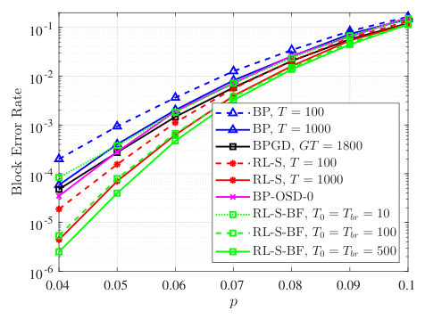
<figcaption class="paper-figure-caption"><b>Fig 1.</b> Fig. 1. Block error rate of the proposed RL-S-BF decoder for the [[180, 10, 15 ≤d ≤18]] A5 code over the depolarizing channel. The proposed decoder is compared with BP, BPGD, RL-S, and BP-OSD-0.</figcaption>
</figure>
<figure class="paper-figure-card">
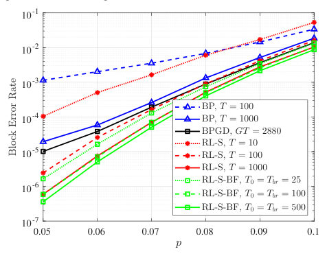
<figcaption class="paper-figure-caption"><b>Fig 2.</b> Fig. 2. Block error rate of our proposed RL-S-BF decoder for the [[288, 12, 18]] BB code over the depolarizing channel. The proposed decoder is compared with BP, BPGD, and RL-S.</figcaption>
</figure>
<figure class="paper-figure-card">
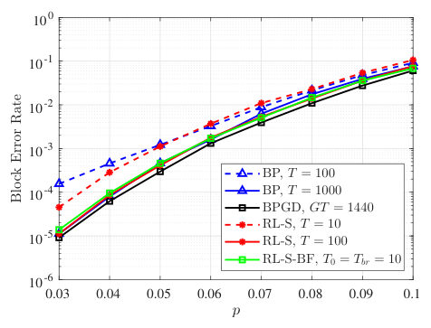
<figcaption class="paper-figure-caption"><b>Fig 3.</b> Fig. 3. Block error rate of our proposed RL-S-BF decoder for the [[144, 12, 12]] BB code over the depolarizing channel. The proposed decoder is compared with BP, BPGD, and RL-S.</figcaption>
</figure>
</div>
<p><strong>Summary.</strong> This paper introduces a learned parallel bit-flipping sequential BP decoder for QLDPC codes, designed to overcome the convergence limitations of standard belief propagation. By running an initial learned sequence followed by parallel testing of single-qubit Pauli-flip candidates, the decoder achieves high reliability with significantly reduced decoding depth compared to purely sequential methods.</p>
<p><strong>Why it may be interesting.</strong> The combination of advanced decoding theory (BP/QLDPC) with machine learning (RL) and parallel hardware considerations makes it highly relevant for quantum computing hardware implementation.</p>
<details>
<summary>Detailed structure</summary>
<p><strong>Main problem.</strong> Developing fast, low-complexity, and reliable decoders for Quantum Low-Density Parity-Check (QLDPC) codes to enable fault-tolerant quantum computation.</p>
<p><strong>Main result.</strong> The proposed parallel bit-flipping decoder significantly improves the reliability of learned sequential BP compared to standard methods, achieving comparable performance to much deeper decoders with a much lower decoding depth.</p>
<p><strong>Method.</strong> It combines an initial learned sequential BP run with a controlled search mechanism that evaluates multiple independent, parallel continuation branches initiated by single-qubit Pauli-flip candidates.</p>
<p><strong>Model / system.</strong> The work focuses on quantum error correction using QLDPC codes, analyzed under the depolarizing channel, involving Pauli error estimation over the quaternary Pauli symbols {I, X, Y, Z}.</p>
<p><strong>Key observables.</strong> Block Error Rate (BER), syndrome mismatch weight ($\|\delta_X\|_1 + \|\delta_Z\|_1$), and local Pauli log-likelihood scores.</p>
<p><strong>Important parameters / regimes.</strong> Channel noise probability ($p$), initial RL-S iterations ($T_0$), continuation iterations ($T_{br}$), and the number of parallel candidates tested ($K$).</p>
<p><strong>Assumptions / limitations.</strong> The core assumption is that independent continuation branches can be executed in parallel, allowing the search to increase hardware resources rather than sequential latency.</p>
<p><strong>Figures summary.</strong> Figures compare the BER performance of the proposed RL-S-BF decoder against standard BP, BPGD, and RL-S across various QLDPC codes (e.g., $[[288, 12, 18]]$ BB code) at different noise levels.</p>
<p><strong>Paper structure.</strong> The paper builds from standard BP to learned sequential BP (RL-S), identifying RL-S's weakness to local decisions. It then proposes the RL-S-BF decoder, which runs RL-S initially, followed by a parallel search over bit-flipping candidates, each initiating an independent RL-S continuation.</p>
</details>
<details>
<summary>Abstract</summary>
<p>Quantum low-density parity-check (QLDPC) codes are promising candidates for low-overhead fault-tolerant quantum computation, but their practical use requires fast, low-complexity, and reliable decoders. Belief propagation (BP) is attractive because of its local message-passing structure, yet standard flooding BP often suffers from convergence failures on QLDPC codes due to short cycles, degeneracy, and symmetric decoding trajectories. Learned sequential BP improves convergence by using a reinforcement-learning policy to choose variable-node update orders, but a single learned trajectory can still be sensitive to unfavorable local Pauli decisions. We propose a learned parallel bit-flipping sequential BP decoder with a new quaternary score combining syndrome gain, a quantized Pauli log-likelihood penalty, and Q-table lookahead at hypothetical post-flip states. Our decoder first runs learned sequential BP for a fixed number of iterations. If the syndrome is not satisfied, it constructs quaternary bit-flipping candidates, each corresponding to changing the current Pauli decision of one qubit. The selected candidates initialize independent learned sequential BP continuations from the same decoder state. Since these continuations are independent, they can be executed in parallel, so testing several candidates mainly increases parallel hardware resources rather than sequential decoding latency. Simulations on representative QLDPC codes over the depolarizing channel show that the proposed decoder improves the reliability of learned sequential BP while having a parallel low-latency structure.</p>
</details>
<p><sub><a href="#top">↑ back to top</a></sub></p>

<p><a id="paper-2610.01277"></a></p>
<h3 id="linear-time-encodable-quantum-codes-near-the-css-gv-bound"><a href="http://arxiv.org/abs/2610.01277v1">Linear-Time Encodable Quantum Codes near the CSS GV Bound</a></h3>
<p><strong>Authors:</strong> Rachel Yun Zhang<br>
<strong>Type:</strong> theory · <strong>Category:</strong> quantum information and computing · <strong>PDF:</strong> <a href="https://arxiv.org/pdf/2610.01277v1">https://arxiv.org/pdf/2610.01277v1</a><br>
<strong>Analysis basis:</strong> full PDF text, analyzed in chunks</p>
<div class="figure-strip-hint">↔ Scroll figures horizontally</div>
<div class="paper-figures-scroll">
<figure class="paper-figure-card">
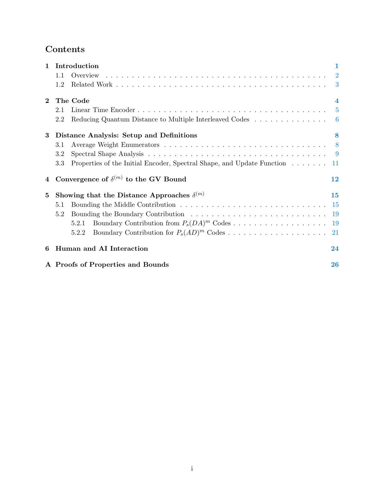
<figcaption class="paper-figure-caption"><b>Fig 1.</b> Low-resolution page preview, page 2</figcaption>
</figure>
<figure class="paper-figure-card">
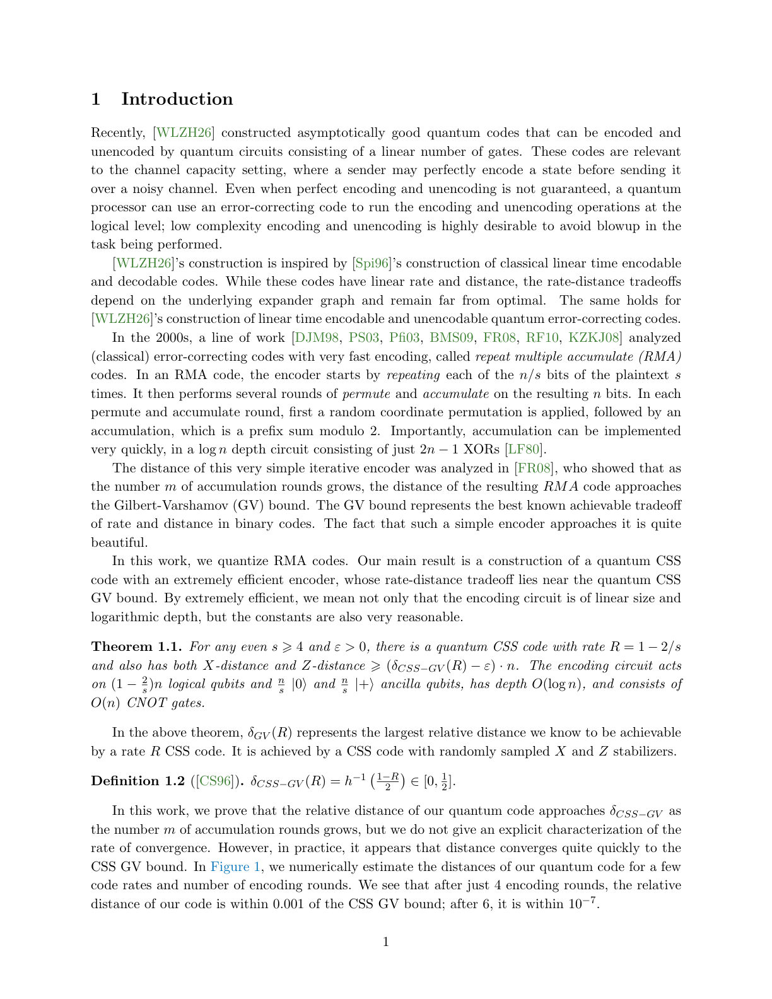
<figcaption class="paper-figure-caption"><b>Fig 2.</b> Low-resolution page preview, page 3</figcaption>
</figure>
<figure class="paper-figure-card">
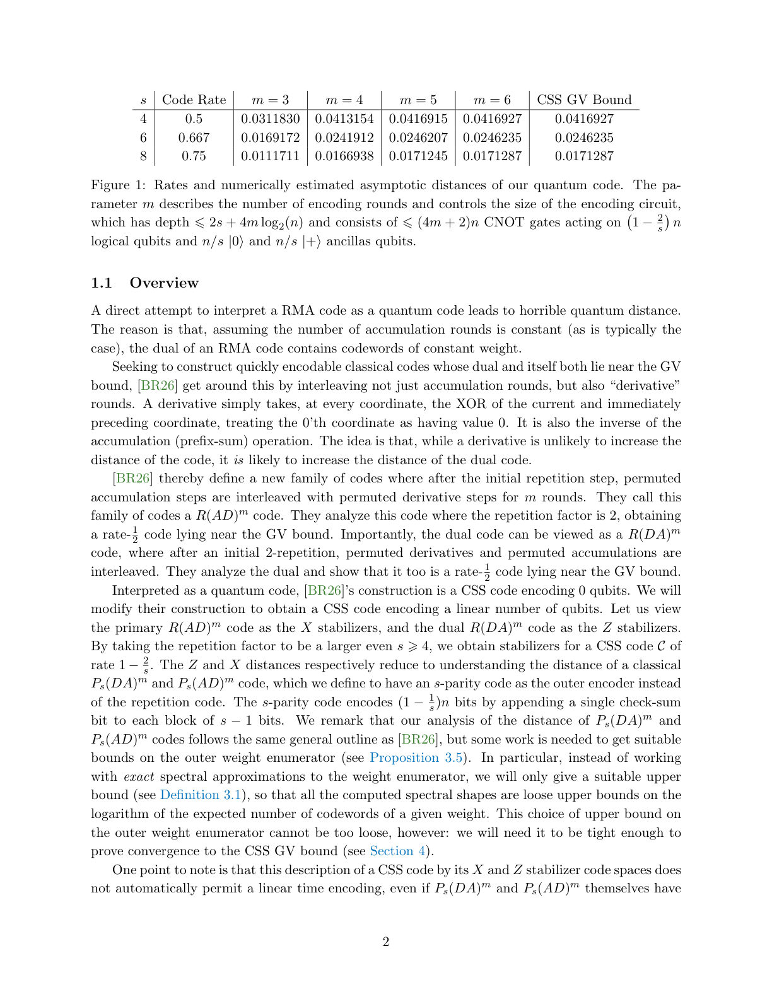
<figcaption class="paper-figure-caption"><b>Fig 3.</b> Low-resolution page preview, page 4</figcaption>
</figure>
<figure class="paper-figure-card">
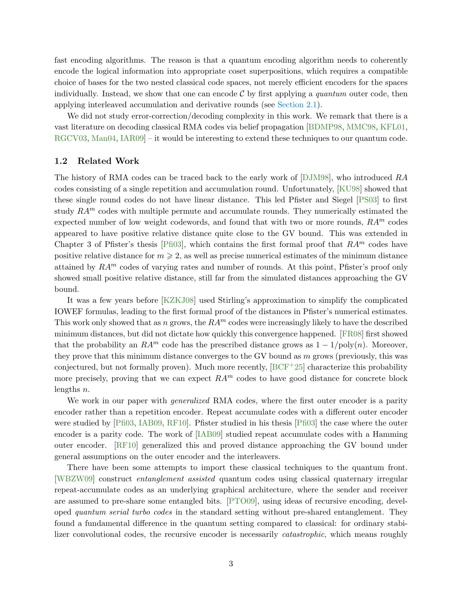
<figcaption class="paper-figure-caption"><b>Fig 4.</b> Low-resolution page preview, page 5</figcaption>
</figure>
<figure class="paper-figure-card">
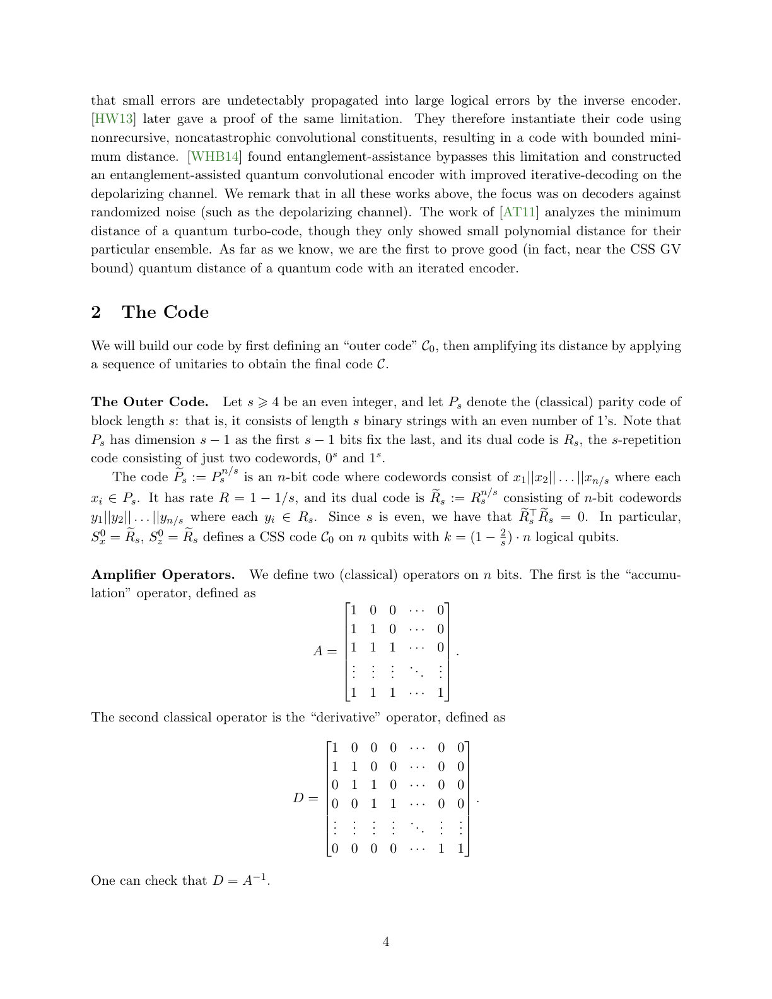
<figcaption class="paper-figure-caption"><b>Fig 5.</b> Low-resolution page preview, page 6</figcaption>
</figure>
</div>
<p><strong>Summary.</strong> This paper develops a method to construct quantum error-correcting codes whose performance approaches the theoretical Gilbert-Varshamov bound. It achieves this by quantum-analogizing classical Repeat Multiple Accumulate codes using interleaved accumulation and derivative operations. The result is significant because it provides a concrete, efficiently implementable construction for near-optimal quantum codes.</p>
<p><strong>Why it may be interesting.</strong> This work provides concrete, constructive methods for approaching fundamental bounds in quantum error correction, which is a core theoretical topic in quantum information science.</p>
<details>
<summary>Detailed structure</summary>
<p><strong>Main problem.</strong> The primary goal is to construct quantum CSS error-correcting codes whose rate-distance tradeoff approaches the theoretical Gilbert-Varshamov (GV) bound while maintaining an extremely efficient encoding circuit.</p>
<p><strong>Main result.</strong> The authors prove the existence of such quantum CSS codes with a rate $R = 1 - 2/s$ and distances approaching the CSS GV bound, achievable with polynomial-time encoding circuits.</p>
<p><strong>Method.</strong> The construction adapts classical Repeat Multiple Accumulate (RMA) codes into a quantum setting using interleaved accumulation and 'derivative' rounds, analyzed via weight enumerator bounding techniques.</p>
<p><strong>Model / system.</strong> The system involves quantum CSS codes, specifically generalized RMA codes, which are constructed using an outer code $C_0$ and an amplification process involving accumulation ($A$) and derivative ($D$) operators.</p>
<p><strong>Key observables.</strong> The relative distance of the code, which is shown to approach the theoretical CSS GV bound $\delta_{	ext{CSS-GV}}(R)$.</p>
<p><strong>Important parameters / regimes.</strong> The rate $R = 1 - 2/s$, the number of accumulation rounds $m$, and the parameter $s$ defining the outer code.</p>
<p><strong>Assumptions / limitations.</strong> The analysis assumes the quantum encoding can be achieved by sequentially applying the outer code and the interleaved rounds, and relies on bounding weight enumerators using specific propositions.</p>
<p><strong>Figures summary.</strong> Figure 1 compares the rates and numerically estimated asymptotic distances for varying $m$ against the theoretical CSS GV Bound for specific values of $s$.</p>
<p><strong>Paper structure.</strong> The paper builds upon previous work by defining the code structure via $L = D \circ \Pi_{2m} \circ A \circ \cdots$, analyzing the distance bounds using weight enumerators (Chunk 3), and establishing necessary functional inequalities (Chunk 4) to prove the convergence to the GV bound.</p>
</details>
<details>
<summary>Abstract</summary>
<p>We construct quantum CSS codes with rate-distance tradeoff approaching the CSS GV bound, which can be encoded by a quantum circuit of logarithmic depth and a linear number of gates. Our construction is heavily inspired by a work of Brehm and Resch and can be viewed as a quantum analogue of classical repeat multiple accumulate codes. The encoder has a particularly simple structure, consisting of a single constant depth outer quantum circuit followed by several classical accumulation and inverse-accumulation layers.</p>
</details>
<p><sub><a href="#top">↑ back to top</a></sub></p>

<p><a id="paper-2610.02125"></a></p>
<h3 id="local-random-quantum-circuits-converge-to-the-porter-thomas-distribution-in-polynomial-depth"><a href="http://arxiv.org/abs/2610.02125v1">Local random quantum circuits converge to the Porter-Thomas distribution in polynomial depth</a></h3>
<p><strong>Authors:</strong> Aniruddha Sen, Nicholas Hunter-Jones<br>
<strong>Type:</strong> theory · <strong>Category:</strong> statistical mechanics · <strong>PDF:</strong> <a href="https://arxiv.org/pdf/2610.02125v1">https://arxiv.org/pdf/2610.02125v1</a><br>
<strong>Analysis basis:</strong> full PDF text, analyzed in chunks</p>
<div class="figure-strip-hint">↔ Scroll figures horizontally</div>
<div class="paper-figures-scroll">
<figure class="paper-figure-card">
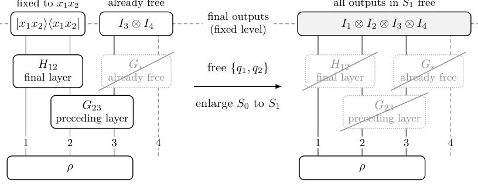
<figcaption class="paper-figure-caption"><b>Fig 1.</b> Figure 1: Bounding the probability mass over larger intervals. Initially S∗= S0 = {q3, q4} is free, so G∗contributes to both masses. The neighboring qubits q1, q2 are fixed until S0 is enlarged to S1 = {q1, q2, q3, q4}. This involves inverting the effect of applying H12 and G23 on the qubits, or freeing the fixed qubits. R0 and R1 are the probability masses on S0 and S1 respectively. We only analyze the effect of the gates in the last two layers of the circuit, freeing the qubits from right to left in this figure.</figcaption>
</figure>
</div>
<p><strong>Summary.</strong> This theoretical paper proves that the output statistics of random quantum circuits with polynomial depth converge to the Porter-Thomas distribution, a hallmark of chaotic quantum systems. The convergence rate is quantified in terms of the total variation distance, providing a rigorous bound based on the circuit depth. This result is fundamental for understanding the statistical behavior expected in near-term quantum computation experiments.</p>
<p><strong>Why it may be interesting.</strong> This work provides a quantitative understanding of how quickly random quantum processes approach the statistical equilibrium predicted by random matrix theory (Porter-Thomas), which is crucial for understanding quantum advantage demonstrations.</p>
<details>
<summary>Detailed structure</summary>
<p><strong>Main problem.</strong> The paper determines the convergence rate of the output probability distribution of local random quantum circuits to the Porter-Thomas distribution.</p>
<p><strong>Main result.</strong> The output distribution of polynomial-depth brickwork random circuits converges to the Porter-Thomas distribution in total variation distance with a rate of $O(1/n^m)$ for depth $O(n^{2m+1}\log(n))$.</p>
<p><strong>Method.</strong> The convergence is rigorously proven by bounding the Total Variation (TV) distance using characteristic functions, moment bounds from approximate designs, and analytic estimates.</p>
<p><strong>Model / system.</strong> The system analyzed is a local random quantum circuit, specifically 'brickwork random circuits' constructed from nearest-neighbor Haar random gates acting on $n$ qubits.</p>
<p><strong>Key observables.</strong> The output probability distribution over a fixed bitstring, $p_U(b) = |\langle b|U|0
angle|^2$, and its comparison to the Porter-Thomas distribution.</p>
<p><strong>Important parameters / regimes.</strong> Circuit depth $l = \Theta(n^{2m+1} \log(n))$, and the total variation distance $d_{TV}(P, Q)$.</p>
<p><strong>Assumptions / limitations.</strong> The analysis relies on the circuit ensemble forming an approximate $k$-design and uses techniques involving mollification and moment control.</p>
<p><strong>Paper structure.</strong> The paper establishes the TV distance bound by relating it to the $L^2$ norm of the difference in characteristic functions, which is then bounded by combining results from different regions of the Fourier space.</p>
</details>
<details>
<summary>Abstract</summary>
<p>Porter-Thomas statistics are a characteristic feature of the output distribution of random quantum states and, more broadly, chaotic quantum many-body systems. Convergence to Porter-Thomas plays a central role in random circuit sampling and experimental demonstrations of quantum advantage, where the output statistics of low-depth random quantum circuits are expected to be approximately Porter-Thomas, despite the absence of a rigorous proof of convergence. We show that the output distribution of polynomial-depth brickwork random circuits converges inverse-polynomially in total variation distance to the Porter-Thomas distribution. Specifically, consider the output probability distribution over a fixed bitstring of a local random quantum circuit, constructed from nearest-neighbor Haar random gates. Then, for any $m \geq 0$, the distribution corresponding to circuits of depth $O(n^{2m+1}\log(n))$ is at most $O(1/n^m)$ far in total variation distance from the Porter-Thomas distribution. Our proof uses moment bounds from approximate designs, analytic estimates for characteristic functions, and a local anticoncentration property for inverse moments.</p>
</details>
<p><sub><a href="#top">↑ back to top</a></sub></p>

<p><a id="paper-2610.01923"></a></p>
<h3 id="loss-tolerant-distributed-lattice-surgery-using-fusion-networks"><a href="http://arxiv.org/abs/2610.01923v1">Loss-tolerant distributed lattice surgery using fusion networks</a></h3>
<p><strong>Authors:</strong> Felix Burt, Richard Meister, Sheng-Ku Lin, Kuan-Cheng Chen, Michael Hanks, Roberto Bondesan, M. S. Kim, Kin K. Leung<br>
<strong>Type:</strong> theory · <strong>Category:</strong> quantum information and computing · <strong>PDF:</strong> <a href="https://arxiv.org/pdf/2610.01923v1">https://arxiv.org/pdf/2610.01923v1</a><br>
<strong>Analysis basis:</strong> full PDF text, analyzed in chunks</p>
<div class="figure-strip-hint">↔ Scroll figures horizontally</div>
<div class="paper-figures-scroll">
<figure class="paper-figure-card">
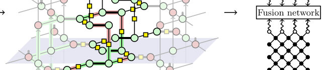
<figcaption class="paper-figure-caption"><b>Fig 1.</b> FIG. 1: Overview of the construction. A lattice surgery merge, carried from the logical level down to a hybrid protocol designed for heterogeneous hardware. At the logical level the merge implements a joint measurement, whose outcome carries the joint observable (red web). This maps to an abstract syndrome extraction diagram with Pauli webs corresponding to logical observables and detecting regions (Section III). Using web-preserving transformations (Section III B) the seam is split and transformed into a graph-like sub-diagram (Section IV C 1) which can be split into resource state components. Measurement and world-line annotations fix a hybrid realisation with fusion networks at the...</figcaption>
</figure>
<figure class="paper-figure-card">
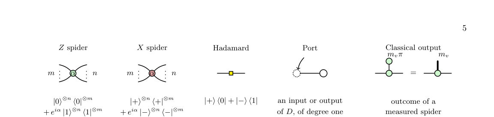
<figcaption class="paper-figure-caption"><b>Fig 2.</b> FIG. 2: Node types. The four values of the type map t, together with the bold leg of a classical output. Spiders are drawn green (Z) and red (X) and carry a phase α ∈{0, π}; Hadamard nodes have degree two, while ports and classical outputs degree one. For the standard ZX calculus and ZX-instrument conventions, see Refs. [64, 69].</figcaption>
</figure>
<figure class="paper-figure-card">
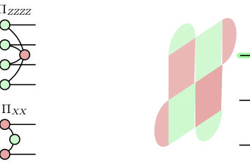
<figcaption class="paper-figure-caption"><b>Fig 3.</b> FIG. 4: Syndrome extraction diagrams and their Pauli webs. (a) Phase-free projector gadgets for a four-qubit Z-type generator and a two-qubit X-type generator, each with a generator spider joined to data spiders. Exchanging spider colours exchanges the generator type. (b) All consecutive measurements of the same Pauli type can be merged into a single layer, and composing layers gives a syndrome extraction diagram (SED), with detecting regions, stabilisers, and logical webs corresponding to the code. A Z-type detecting region is shown in red, an X-type stabiliser from a two-qubit boundary generator in green, and an X logical web along the top boundary in green.</figcaption>
</figure>
<figure class="paper-figure-card">

<figcaption class="paper-figure-caption"><b>Fig 4.</b> FIG. 5: Splitting a detecting region. (left) An SED with a selected region S and a highlighted detecting region. (right) Splitting the boundary generator spiders gives D[S] a matching boundary.</figcaption>
</figure>
<figure class="paper-figure-card">

<figcaption class="paper-figure-caption"><b>Fig 5.</b> FIG. 6: Two realisations of the syndrome extraction diagram: circuit-based (a) and measurement-based (b). In the circuit-based realisation, directed edges represent data-qubit world-lines, while each generator spider lies on a distinct world-line and has a classical output recording its stabiliser measurement outcome. In the measurement-based realisation, each bulk spider lies on a distinct world-line and represents a qubit initialised in |+⟩, while edges represent CZ gates forming a cluster state and classical outputs record the measurement outcomes.</figcaption>
</figure>
</div>
<p><strong>Summary.</strong> This paper addresses the challenge of scaling quantum computers by analyzing error correction for distributed lattice surgery across noisy photonic links. The authors develop and test hybrid protocols that combine circuit-based and measurement-based techniques. They demonstrate that these hybrid approaches significantly enhance the error-correcting distance of the quantum interface, especially in low-noise regimes.</p>
<p><strong>Why it may be interesting.</strong> It provides concrete, quantifiable improvements to the fault-tolerance thresholds for networking quantum processors, which is crucial for building large-scale quantum computers using photonic interconnects.</p>
<details>
<summary>Detailed structure</summary>
<p><strong>Main problem.</strong> Scaling fault-tolerant quantum computation requires performing distributed logical operations across photonic links, which suffer from noise like photon loss, unlike local QPUs.</p>
<p><strong>Main result.</strong> Hybrid protocols significantly improve the interface distance for distributed lattice surgery, achieving a 50% erasure threshold when local noise is negligible.</p>
<p><strong>Method.</strong> The authors use ZX calculus transformations to construct and analyze hybrid syndrome extraction protocols applied to distributed rotated surface code lattice surgery.</p>
<p><strong>Model / system.</strong> The work models matter-based Quantum Processing Units (QPUs) connected via photonic links, implementing lattice surgery for distributed operations and analyzing performance under a heterogeneous error model.</p>
<p><strong>Key observables.</strong> Interface-erasure threshold, merge-observable interface distance, and perpendicular-observable interface distance.</p>
<p><strong>Important parameters / regimes.</strong> Local error rates ($10^{-3}$ and $10^{-4}$), and the degree of resource state truncation.</p>
<p><strong>Assumptions / limitations.</strong> The analysis assumes the ability to model the combination of circuit noise, resource-state errors, and photonic loss/fusion failures, treating losses as erasures.</p>
<p><strong>Figures summary.</strong> Figure 1 illustrates the construction process from the logical level down to a hybrid realization involving fusion networks at the interface and circuit-based syndrome extraction elsewhere.</p>
<p><strong>Paper structure.</strong> The paper builds from defining the problem of distributed noise, detailing the use of ZX calculus and Pauli webs, applying these tools to compare different interface geometries (fused Bell pairs vs. fusion networks), and finally analyzing performance under realistic, combined noise models.</p>
</details>
<details>
<summary>Abstract</summary>
<p>Networking matter-based quantum processing units (QPUs) offers a promising route to scaling fault-tolerant quantum computers. This requires distributed logical operations to be performed across photonic links, where noise is characteristically different from and stronger than in local QPUs owing to photon loss and probabilistic linear-optical operations. Measurement- and fusion-based quantum computing are designed to be robust against loss and probabilistic photonic operations, suggesting they could complement circuit-based error correction at the interface between networked QPUs. We use ZX calculus transformations to construct hybrid syndrome extraction protocols and apply them to distributed rotated surface code lattice surgery, demonstrating that several protocols attain a $50\%$ interface-erasure threshold when local noise is absent, including circuit-based lattice surgery using fused Bell pairs and hybrid protocols using linear cluster states. Relative to a straight Bell-pair interface geometry, the hybrid protocols increase the merge-observable interface distance from $d+1$ to $2d+1$ and restore the perpendicular-observable interface distance from $\lfloor(d+1)/2\rfloor$ to $d$. We calculate how the threshold decreases when using truncated resource states and map correctable regions under resource-state errors, local circuit noise, and fusion erasure. We then convert these erasure thresholds into photon-loss thresholds and probe subthreshold performance using fusion boosting. At circuit and resource-state error rates of $10^{-3}$, local errors largely mask the interface-distance advantage. As local noise is reduced to $10^{-4}$ and below, the linear-chain protocols improve more rapidly with decreasing erasure, suggesting that interface distance enhancements are effective in low local noise regimes.</p>
</details>
<p><sub><a href="#top">↑ back to top</a></sub></p>

<p><a id="paper-2610.01549"></a></p>
<h3 id="molecular-dynamics-with-nuclear-effects-on-quantum-computers"><a href="http://arxiv.org/abs/2610.01549v1">Molecular Dynamics with Nuclear Effects on Quantum Computers</a></h3>
<p><strong>Authors:</strong> Lukas Haßfurth, Juliane Heitkämper, Elias Walter, Birger Horstmann<br>
<strong>Type:</strong> theory · <strong>Category:</strong> other · <strong>PDF:</strong> <a href="https://arxiv.org/pdf/2610.01549v1">https://arxiv.org/pdf/2610.01549v1</a><br>
<strong>Analysis basis:</strong> full PDF text, analyzed in chunks</p>
<div class="figure-strip-hint">↔ Scroll figures horizontally</div>
<div class="paper-figures-scroll">
<figure class="paper-figure-card">

<figcaption class="paper-figure-caption"><b>Fig 1.</b> Figure 1 The investigated molecules. Nuclei that were treated with NEO are represented by the wireframes indicating isosurfaces of quantum nuclear probability density. (a) Hydrogen molecule. (b) Water. (c) Zundel ion.</figcaption>
</figure>
<figure class="paper-figure-card">

<figcaption class="paper-figure-caption"><b>Fig 2.</b> Figure 2 Schematic representation of the hybrid-classical MD algorithm.</figcaption>
</figure>
<figure class="paper-figure-card">

<figcaption class="paper-figure-caption"><b>Fig 3.</b> Figure 3 The normal modes of water. From left to right: Bending, symmetric stretching and antisymmetric stretching.</figcaption>
</figure>
<figure class="paper-figure-card">

<figcaption class="paper-figure-caption"><b>Fig 4.</b> Figure 4 Active electronic orbitals for the water molecule.</figcaption>
</figure>
<figure class="paper-figure-card">

<figcaption class="paper-figure-caption"><b>Fig 5.</b> Figure 5 Potential energy along the proton transfer reaction coordi- nate, computed using the active space [5,8,14,23,25]. (a) Computed with ab-initio electronic structure methods. (b) Computed with the described ab-initio nuclear-electronic structure method.</figcaption>
</figure>
</div>
<p><strong>Summary.</strong> This paper presents a novel hybrid quantum-classical algorithm to perform ab-initio molecular dynamics that explicitly includes nuclear quantum effects using the NEO framework. By leveraging VQE on quantum hardware for energy and force calculations, the authors successfully simulate systems like the Zundel ion, demonstrating that quantum effects significantly alter molecular dynamics predictions.</p>
<p><strong>Why it may be interesting.</strong> This work directly addresses the intersection of quantum computation and molecular dynamics, providing a pathway to simulate complex quantum phenomena like proton transfer that are intractable classically.</p>
<details>
<summary>Detailed structure</summary>
<p><strong>Main problem.</strong> The primary challenge is incorporating computationally expensive nuclear quantum effects, such as proton tunneling, into ab-initio molecular dynamics simulations.</p>
<p><strong>Main result.</strong> The proposed hybrid quantum-classical algorithm successfully simulates dynamics with nuclear quantum effects, showing that proton shuttling in the Zundel ion becomes effectively barrierless.</p>
<p><strong>Method.</strong> A novel hybrid quantum-classical algorithm is introduced, using the Variational Quantum Eigensolver (VQE) on a quantum computer to calculate ground state energies and forces, while classical methods update the molecular geometries.</p>
<p><strong>Model / system.</strong> The study focuses on molecular systems like H2, H2O, and the Zundel ion (H5O2+). The theoretical framework employs the Nuclear-Electronic Orbital (NEO) method to treat light nuclei quantum-mechanically alongside electrons.</p>
<p><strong>Key observables.</strong> Vibrational spectra, ground state energies, forces, and nuclear quantum probability density.</p>
<p><strong>Important parameters / regimes.</strong> The feasibility of using compact hardware-efficient ansatz circuits compared to more accurate UCCSD ansatzes on near-term quantum devices.</p>
<p><strong>Assumptions / limitations.</strong> The algorithm assumes that the quantum nuclei are pinned to their classical expectation values, and the classical propagation uses the velocity Verlet algorithm.</p>
<p><strong>Figures summary.</strong> Figures illustrate the molecules with quantum nuclear probability density isosurfaces, and flowcharts detail the hybrid quantum-classical molecular dynamics algorithm.</p>
<p><strong>Paper structure.</strong> The paper develops the theoretical framework by first outlining the need for the hybrid algorithm, detailing the VQE implementation for energy/forces, and validating the approach through simulations of benchmark molecules.</p>
</details>
<details>
<summary>Abstract</summary>
<p>Nuclear quantum effects are critical for describing proton transfer and hydrogen bonding, but their incorporation into quantum chemistry calculations is often computationally prohibitive on classical hardware. A promising alternative are quantum computers due to their linear scaling in the space requirements with system size. We introduce a novel hybrid quantum-classical algorithm for ab-initio molecular dynamics that incorporates nuclear quantum effects via the nuclear-electronic orbital method. The proposed algorithm evaluates ground state energies and forces on the quantum computer using a variational quantum eigensolver, while the molecular geometries are updated classically. We validate our approach through simulations of $\text{H}_2$, $\text{H}_2\text{O}$ and the Zundel ion $\text{H}_5\text{O}_2^+$, comparing the simulated vibrational spectra with experimental data. Upon inclusion of nuclear quantum effects, the proton shuttling movement in the Zundel ion becomes effectively barrierless, and errors in the simulated frequencies improve significantly. Employing compact hardware-efficient ansatz circuits we achieve results comparable to the more accurate UCCSD ansatzes, which hints towards the feasibility of executing our algorithm on near-term quantum devices.</p>
</details>
<p><sub><a href="#top">↑ back to top</a></sub></p>

<p><a id="paper-2610.00670"></a></p>
<h3 id="monogamous-quantum-corrections-to-holographic-mutual-information"><a href="http://arxiv.org/abs/2610.00670v1">Monogamous quantum corrections to holographic mutual information</a></h3>
<p><strong>Authors:</strong> César A. Agón, Javier Molina-Vilaplana, Javier Moreno<br>
<strong>Type:</strong> theory · <strong>Category:</strong> statistical mechanics · <strong>PDF:</strong> <a href="https://arxiv.org/pdf/2610.00670v1">https://arxiv.org/pdf/2610.00670v1</a><br>
<strong>Analysis basis:</strong> full PDF text, analyzed in chunks</p>
<div class="figure-strip-hint">↔ Scroll figures horizontally</div>
<div class="paper-figures-scroll">
<figure class="paper-figure-card">

<figcaption class="paper-figure-caption"><b>Fig 1.</b> Figure 1: Schematic representation of the entanglement wedges associated with the boundary regions A∂, B∂, and C∂. We denote D ≡EW(B∂∪C∂).</figcaption>
</figure>
<figure class="paper-figure-card">

<figcaption class="paper-figure-caption"><b>Fig 2.</b> Figure 2: Two points xA and x′ B, expressed in Poincaré coordinates, lie on ∂A = ΓA ∪A∂and ∂B = ΓB ∪B∂, respectively. They are connected by the geodesic γ.</figcaption>
</figure>
</div>
<p><strong>Summary.</strong> This theoretical paper develops an extensive model for bulk Mutual Information in AdS spacetime using the correlator of a massive Dirac fermion. By demonstrating that the bulk MI's extensivity implies the satisfaction of holographic entropy inequalities on the boundary, the authors provide a rigorous framework for understanding quantum corrections to entanglement in holographic theories.</p>
<p><strong>Why it may be interesting.</strong> The connection between geometric properties (extensivity) of bulk quantities and fundamental quantum information constraints (monogamy) provides a powerful, universal tool for testing quantum gravity models in condensed matter analogues.</p>
<details>
<summary>Detailed structure</summary>
<p><strong>Main problem.</strong> The paper aims to construct an extensive model for bulk Mutual Information (MI) in Anti-de Sitter (AdS) spacetime to describe quantum corrections to holographic MI.</p>
<p><strong>Main result.</strong> It is shown that the extensivity of the bulk MI is sufficient to guarantee that the quantum-corrected boundary entropy vector satisfies all holographic entropy cone inequalities, including monogamy of MI.</p>
<p><strong>Method.</strong> The authors use the Faulkner–Lewkowycz–Maldacena prescription and model the bulk MI using a covariantly conserved current-current kernel derived from a free massive Dirac fermion.</p>
<p><strong>Model / system.</strong> The physical context is holographic theories governed by the AdS/CFT correspondence. The model is realized explicitly using the current-current correlator of a free massive Dirac fermion in AdS spacetime.</p>
<p><strong>Key observables.</strong> Mutual Information (MI), Von Neumann entropy (S), Holographic Entropy Cone (HEC) inequalities, and the current-current correlator $\langle J_\mu J'_
u 
angle$.</p>
<p><strong>Important parameters / regimes.</strong> The mass $m$ of the fermion, the AdS radius $L$, and the renormalization group flow parameter $\ell$.</p>
<p><strong>Assumptions / limitations.</strong> The primary assumption is that positive and exactly extensive bulk MI is sufficient for satisfying the HEC inequalities. The analysis also relies on the FLM prescription to capture subleading quantum corrections.</p>
<p><strong>Figures summary.</strong> Figure 1 schematically illustrates the entanglement wedges for three disjoint boundary regions. Figure 2 details the geometry for calculating MI between two disjoint boundary regions in Poincaré coordinates.</p>
<p><strong>Paper structure.</strong> The paper develops the MI functional using the current-current correlator, establishes the connection between bulk extensivity and boundary constraints, and explicitly calculates the MI in both long-distance and short-distance limits using the free fermion model.</p>
</details>
<details>
<summary>Abstract</summary>
<p>We construct an extensive model of bulk mutual information (MI) in anti-de Sitter spacetime and use it to describe the leading quantum corrections to the MI of certain holographic theories. The equivalence between bulk and boundary MI follows from the Faulkner--Lewkowycz--Maldacena prescription. We show that the extensivity of the bulk MI is sufficient for the quantum-corrected boundary entropy vector to satisfy monogamy of MI and all other holographic entropy cone inequalities. Our model is built from a covariantly conserved current-current kernel in AdS and is realized explicitly by a free massive Dirac fermion, whose boundary MI at long distances is that of a fermionic generalized free field (GFF). The construction also reproduces the expected short-distance divergence structure of a GFF, and the current-current correlator defines a positive and monotonically decreasing function along the renormalization-group flow. We illustrate this explicitly for disjoint half-disks at the conformal fixed point of the model in AdS$_3$, where we present the exact result.</p>
</details>
<p><sub><a href="#top">↑ back to top</a></sub></p>

<p><a id="paper-2610.01125"></a></p>
<h3 id="multivariate-quantum-signal-processing"><a href="http://arxiv.org/abs/2610.01125v1">Multivariate Quantum Signal Processing</a></h3>
<p><strong>Authors:</strong> Guang Hao Low<br>
<strong>Type:</strong> theory · <strong>Category:</strong> quantum information and computing · <strong>PDF:</strong> <a href="https://arxiv.org/pdf/2610.01125v1">https://arxiv.org/pdf/2610.01125v1</a><br>
<strong>Analysis basis:</strong> full PDF text, analyzed in chunks</p>
<div class="figure-strip-hint">↔ Scroll figures horizontally</div>
<div class="paper-figures-scroll">
<figure class="paper-figure-card">

<figcaption class="paper-figure-caption"><b>Fig 1.</b> Figure 1: One oracle port with delay r = 2 and horizon N = 5. At each time, the system matrix couples the corresponding public clock subspace to one private position. These subspaces are |k⟩clk ⊗P and |k mod 2⟩j ⊗Lj. Each oracle rectangle denotes a controlled call on both private positions. The calls occur at times 2 and 4, before the corresponding system operation. An amplitude written at time k is read at k + 2 after one oracle call. The lines denote direct-sum subspaces represented by the binary address register. The input consists of the public amplitudes (u0, . . . , u4) and two initial private amplitudes. The output consists of (y0, . . . , y4) and both unmeasured private amplitudes....</figcaption>
</figure>
<figure class="paper-figure-card">

<figcaption class="paper-figure-caption"><b>Fig 2.</b> Figure 2: Circuit for quditization on the binary address register and clock label. The system operation S(k) acts through the embedding Jk in Equation (2.25), coupling the indicated public and private basis subspaces. Routing updates the address during these couplings. The operation Qk applies the scheduled oracles to all their private positions. A port is scheduled precisely when rj | k. Projecting the encoding register onto |0⟩a after input-clock preparation and output-clock unpreparation gives eGN/αclk, as defined in Equations (2.32) and (A.16).</figcaption>
</figure>
<figure class="paper-figure-card">

<figcaption class="paper-figure-caption"><b>Fig 3.</b> Figure 3: Examples of shared processing modules. An arrow points from a construction to a module it uses. Shaded boxes name the algorithms and their modules; all module names link to their definitions. The dashed edge denotes the weighted version of the same Cayley transformation. Elementary connections are shown in the later IIR diagrams.</figcaption>
</figure>
<figure class="paper-figure-card">

<figcaption class="paper-figure-caption"><b>Fig 4.</b> Figure 4: The same tap and preparation reflection define an IIR and a finite preparation algorithm. The lift receives the prepared state in its private subspace, initially empty public slots retain every transmitted amplitude, and the final success flag selects their direct sum.</figcaption>
</figure>
<figure class="paper-figure-card">

<figcaption class="paper-figure-caption"><b>Fig 5.</b> Figure 5: The sign lattice is a path of unitary sections. The two endpoints are public. A known boundary swap closes every internal coordinate, and the feedback connection applies the even and odd matchings. The marker z counts a whole two-query round.</figcaption>
</figure>
</div>
<p><strong>Summary.</strong> This work introduces Multivariate Quantum Signal Processing (MQSP), a powerful framework that models quantum query algorithms using the mathematical structure of multiport IIR filters. It achieves optimal resource bounds for complex tasks like Hamiltonian simulation and solving linear equations by providing a systematic design methodology. This advances quantum algorithm design by bridging classical signal processing theory with quantum computation theory.</p>
<p><strong>Why it may be interesting.</strong> The connection between classical signal processing theory (IIR filters) and quantum query complexity provides a powerful, structured, and analytically rigorous toolset for designing quantum algorithms, particularly for open quantum systems dynamics.</p>
<details>
<summary>Detailed structure</summary>
<p><strong>Main problem.</strong> The paper develops Multivariate Quantum Signal Processing (MQSP) to design efficient quantum algorithms for matrix-valued transformations involving multiple noncommuting, nonnormal matrices.</p>
<p><strong>Main result.</strong> It provides a complete characterization of achievable quantum transfer functions and achieves optimal query complexity bounds for various problems, including Hamiltonian simulation and solving linear systems.</p>
<p><strong>Method.</strong> The core method maps quantum query algorithms onto the analytic structure of multiport Infinite-Impulse-Response (IIR) filters, using a transfer-function methodology derived from feedback loops.</p>
<p><strong>Model / system.</strong> The framework applies to quantum transducers implementing transformations defined by multiple noncommuting, nonnormal block-encoded matrices, generalizing concepts from standard Quantum Signal Processing (QSP).</p>
<p><strong>Key observables.</strong> Weighted query cost, time-norm dependence, and error bounds ($\epsilon$).</p>
<p><strong>Important parameters / regimes.</strong> The number of noncommuting matrices ($m$), the approximation depth ($N$), and the query cost structure ($\langle\vec\lambda,\vec C
angle_{1/2}$).</p>
<p><strong>Assumptions / limitations.</strong> The method relies on the existence of analytic IIR representations for the required transformations and involves approximating continuous IIR functions with finite-impulse-response (FIR) circuits.</p>
<p><strong>Figures summary.</strong> Not specified.</p>
<p><strong>Paper structure.</strong> The paper builds upon the mathematical framework of IIR filters to characterize quantum query algorithms, providing specific, optimized bounds and constructions for Hamiltonian simulation, linear system solving, and generalized eigenvalue problems.</p>
</details>
<details>
<summary>Abstract</summary>
<p>We develop Multivariate Quantum Signal Processing for designing matrix-valued transformations of multiple noncommuting nonnormal block-encoded matrices. Our framework equips quantum transducers with the analytic structure of multiport Infinite-Impulse-Response (IIR) filters and establishes a transfer-function methodology for designing quantum query algorithms. Efficiently computable analytic bounds that hold uniformly across the oracle promise yield efficient quantum circuits with logarithmic error dependence and near-unity success probability, paralleling the approximation-theoretic guarantees of univariate QSP/QSVT. We provide a complete characterization of achievable transfer functions and a principled library of analytic IIR components. Our modular designs greatly improve or resolve the per-oracle query complexity of open multi-oracle problems: (1) Hamiltonian simulation under $H=\sum_j H_j$ with weighted quasinorm cost $\approx t\langle\vecλ,\vec C\rangle_{1/2}+\mathcal{O}(\|\vec C\|_1\log(1/ε))$ for block-encoding normalizations $\vecλ$ and costs $\vec C$; (2) sparse simulation with optimal time--norm $Θ(\sqrt{d}\|H\|_{\rm 1\to2}t)$ and additive error dependence; (3) solving linear systems and (4) differential equations under minimal matrix assumptions with optimal weighted state-preparation and multi-term cost; (5) ground-state preparation and energy estimation; (6) generalized eigenvalue problems. We apply these to exactly simulate downfolded Hamiltonians with leading cost $t\langle\vecλ_{\rm eff},\vec C_{\rm eff}\rangle_{1/2}$ further reduced by fractional dynamic correlation energy contributions from coarse-grained Hamiltonians, and show similar classical-data-input-reduction results for multiscale graph classification via Kron reduction. We also show the online generalization with anisotropic Kalman filtering of streaming quantum data.</p>
</details>
<p><sub><a href="#top">↑ back to top</a></sub></p>

<p><a id="paper-2610.00841"></a></p>
<h3 id="neural-fourier-surrogates-for-data-reuploading-quantum-neural-networks"><a href="http://arxiv.org/abs/2610.00841v1">Neural Fourier Surrogates for Data Reuploading Quantum Neural Networks</a></h3>
<p><strong>Authors:</strong> Oliver Knitter, Jonathan Mei, Sang Hyub Kim, Chi Chen, Masako Yamada, Martin Roetteler<br>
<strong>Type:</strong> both · <strong>Category:</strong> numerical methods · <strong>PDF:</strong> <a href="https://arxiv.org/pdf/2610.00841v1">https://arxiv.org/pdf/2610.00841v1</a><br>
<strong>Analysis basis:</strong> full PDF text, analyzed in chunks</p>
<div class="figure-strip-hint">↔ Scroll figures horizontally</div>
<div class="paper-figures-scroll">
<figure class="paper-figure-card">

<figcaption class="paper-figure-caption"><b>Fig 1.</b> Figure 1. Basic architecture of an NFS. A sampler iteratively queries the modulus to generate a weighted set of frequencies. The modulus, phase, and scaling values are combined with the frequen- cies and model inputs to produce weighted averages approximating both the model output values and the corresponding gradients.</figcaption>
</figure>
<figure class="paper-figure-card">

<figcaption class="paper-figure-caption"><b>Fig 2.</b> Figure 2. Test accuracy, as a function of training set size, for a Neural Fourier Surrogate with encoding depth L = 4, an equivalent QNN, and a Random Fourier Features (RFF) baseline on six benchmark datasets. Shaded regions show ±1 standard deviation across 5 seeds.</figcaption>
</figure>
<figure class="paper-figure-card">

<figcaption class="paper-figure-caption"><b>Fig 3.</b> Figure 3. Test accuracy as a function of encoded dimension (qubit number) for an NFS and a QNN with encoding depth L = 1, trained on up to 500 samples across 3 datasets. Shaded regions show ±1 standard deviation across 5 seeds.</figcaption>
</figure>
<figure class="paper-figure-card">

<figcaption class="paper-figure-caption"><b>Fig 4.</b> Figure 4. (a) NFS test accuracy as a function of training set size on a synthetic Fourier target function with cutoff fmax = 3. Curves shown for encoding depth choices between 1 and 6, alongside Random Forest and MLP baselines. (b) NFS test accuracy across all combinations of encoding depth and Fourier cutoff L, fmax ∈{1, . . . , 6}, averaged across 5 seeds. Higher choices of L provide diminishing returns beyond the target’s spectral complexity.</figcaption>
</figure>
<figure class="paper-figure-card">

<figcaption class="paper-figure-caption"><b>Fig 5.</b> Figure 5. Pearson r between the learned frequency distribution of an NFS and the Fourier spectrum of a fixed random QNN, at matched encoding depths, averaged over 25 trials. Error bars show the mean ±1 standard deviation. NFS was trained to match randomly sampled QNN output. The bimodal distribution indicates NFS either recovers the QNN distribution or learns an altogether different one.</figcaption>
</figure>
</div>
<p><strong>Summary.</strong> This paper introduces Neural Fourier Surrogates (NFS), a classical neural network designed to mimic the Fourier structure of Quantum Neural Network (QNN) outputs. By achieving performance comparable to QNNs while representing a broader function class, NFS establishes itself as a powerful and theoretically grounded classical baseline for benchmarking quantum machine learning models.</p>
<p><strong>Why it may be interesting.</strong> While the focus is on ML, the mathematical machinery—approximating quantum expectation values via Fourier series and comparing classical surrogates to quantum constraints—is highly relevant to understanding the limitations and expressivity of quantum simulation techniques.</p>
<details>
<summary>Detailed structure</summary>
<p><strong>Main problem.</strong> The boundary between classical and quantum advantage in quantum machine learning is poorly understood due to the fundamental differences in function classes between QNNs and classical models.</p>
<p><strong>Main result.</strong> The proposed Neural Fourier Surrogates (NFS) architecture is shown to be a highly effective classical baseline, achieving performance comparable to data-reuploading QNNs while representing a broader function class.</p>
<p><strong>Method.</strong> NFS is a stochastic classical neural network that approximates the Fourier series coefficients of a QNN's expectation value by sampling random frequencies, bypassing the curse of dimensionality.</p>
<p><strong>Model / system.</strong> The work focuses on Quantum Neural Networks (QNNs) that encode classical data via a unitary evolution $U(x) = \exp(ixH)$, resulting in an expectation value expressible as a finite Fourier series. NFS is designed to model this same Fourier structure using a transformer-based architecture.</p>
<p><strong>Key observables.</strong> Test accuracy on 15 benchmark datasets, Pearson correlation ($r$) between learned and true Fourier spectra, and performance comparison against established classical baselines (MLP, RFF, etc.).</p>
<p><strong>Important parameters / regimes.</strong> Encoding depth ($f_{	ext{max}}$), training set size, and hyperparameters for the NFS network (e.g., Gaussian prior coefficient).</p>
<p><strong>Assumptions / limitations.</strong> The primary assumption is that NFS can serve as a natural classical baseline because its function class is broader than the constrained function class of the QNN measurement observable.</p>
<p><strong>Figures summary.</strong> Figures compare NFS/QNN test accuracy vs. training set size and encoded dimension; Figure 5 shows the Pearson correlation between the learned frequency distribution of NFS and the true QNN spectrum.</p>
<p><strong>Paper structure.</strong> The paper introduces NFS to approximate QNN outputs, details the stochastic approximation and architecture (using autoregressive sampling), compares its performance against various classical baselines and QNNs on benchmark datasets, and analyzes capacity scaling.</p>
</details>
<details>
<summary>Abstract</summary>
<p>For quantum machine learning, the exact boundary between classical and quantum advantage is still poorly understood. Direct comparison between quantum neural networks (QNNs) and existing classical models, which encompass fundamentally different function classes, often fails to provide broader insight into the difference between the two. Inspired by the techniques of Neural Quantum States and Random Fourier Features, this work introduces Neural Fourier Surrogates (NFS), a stochastic classical neural network architecture for efficiently learning coefficients over the same finite Fourier series support as quantum neural networks. Testing on a selection of tabular benchmark datasets, we find that NFS is an effective classifier architecture broadly competitive with established classical baselines, including a comparable Random Fourier Features model, and possessing comparable performance to data-reuploading QNNs; combined with additional analysis comparing the learned Fourier spectra of QNNs and NFS on synthetic data, these results establish NFS as a natural classical baseline for evaluating QNN performance.</p>
</details>
<p><sub><a href="#top">↑ back to top</a></sub></p>

<p><a id="paper-2610.00506"></a></p>
<h3 id="noisy-quantum-query-complexity-via-fractional-block-sensitivity"><a href="http://arxiv.org/abs/2610.00506v1">Noisy Quantum Query Complexity via Fractional Block Sensitivity</a></h3>
<p><strong>Authors:</strong> Mehil Agarwal, Shravas Rao, Fang Song<br>
<strong>Type:</strong> theory · <strong>Category:</strong> quantum information and computing · <strong>PDF:</strong> <a href="https://arxiv.org/pdf/2610.00506v1">https://arxiv.org/pdf/2610.00506v1</a><br>
<strong>Analysis basis:</strong> full PDF text, analyzed in chunks</p>
<div class="figure-strip-hint">↔ Scroll figures horizontally</div>
<div class="paper-figures-scroll">
<figure class="paper-figure-card">

<figcaption class="paper-figure-caption"><b>Fig 1.</b> Figure 1: Weighted-star input structure induced by a fractional block-sensitivity packing at the center 0n. Sensitive blocks B1,...,Bm at 0n; P B∋i wB ≤1 (∀i ∈[n]); W = P B wB = fbs(f ,0n).</figcaption>
</figure>
<figure class="paper-figure-card">

<figcaption class="paper-figure-caption"><b>Fig 2.</b> Figure 2: One step of the purified IID dephasing computation. The truth register is initialized in the weighted-star state |u〉= 1 p</figcaption>
</figure>
<figure class="paper-figure-card">

<figcaption class="paper-figure-caption"><b>Fig 3.</b> Figure 2 illustrates one step of computation in our analysis. We initialize a truth table register in</figcaption>
</figure>
<figure class="paper-figure-card">

<figcaption class="paper-figure-caption"><b>Fig 4.</b> Figure 3: The active two-dimensional truth plane for record R and queried index i. The basis (|uR〉,|eR,i〉) is adapted to the old A/Q decomposition, while (|ℓR,i〉,|hR,i〉) is adapted to the no-hit/hit decomposition of the query.</figcaption>
</figure>
</div>
<p><strong>Summary.</strong> This paper develops a unified theoretical framework using fractional block sensitivity to determine the quantum query complexity of functions under various forms of noise. It derives specific lower bounds for negligent and dephasing noise models, culminating in a general 'Computational-Opportunity Theorem.' This work is significant for understanding the fundamental limits of quantum computation when faced with realistic imperfections.</p>
<p><strong>Why it may be interesting.</strong> The development of the Computational-Opportunity Theorem provides a powerful, general tool to derive lower bounds for quantum algorithms operating in realistic, noisy physical environments, bridging theoretical complexity with physical noise models.</p>
<details>
<summary>Detailed structure</summary>
<p><strong>Main problem.</strong> The paper investigates quantum query complexity for functions under various models of imperfect oracle access, including negligent and dephasing noise.</p>
<p><strong>Main result.</strong> They establish lower bounds for quantum query complexity in terms of fractional block sensitivity (fbs) for multiple noise models, including a novel 'Computational-Opportunity Theorem' for time-varying dephasing.</p>
<p><strong>Method.</strong> The core method involves developing a unified framework based on fractional block sensitivity (fbs) and applying it to analyze resource constraints imposed by different noise processes.</p>
<p><strong>Model / system.</strong> The study analyzes abstract computational models involving oracle queries, specifically considering the impact of noise characterized by negligence probability (p) or time-dependent dephasing rates (p_t).</p>
<p><strong>Key observables.</strong> Quantum query complexity ($Q_\epsilon(f)$), fractional block sensitivity ($   ext{fbs}(f)$), and the derived 'opportunity resource function' ($R(\mu)$).</p>
<p><strong>Important parameters / regimes.</strong> Noise probabilities ($p, p_t$), error tolerance ($\epsilon$), and the structure of the function $f$.</p>
<p><strong>Assumptions / limitations.</strong> The analysis relies on establishing lower bounds by relating quantum resources to the fbs, and in the extended dephasing model, it assumes the resource can be characterized by a convex optimization problem.</p>
<p><strong>Paper structure.</strong> The paper progresses by introducing fbs, applying it sequentially to the negligent model, the hybrid query model, the IID dephasing model, and finally generalizing to a comprehensive 'Computational-Opportunity Theorem' for time-varying dephasing schedules.</p>
</details>
<details>
<summary>Abstract</summary>
<p>We study quantum query complexity under several models of imperfect oracle access, and develop lower bounds through a common framework based on fractional block sensitivity (\(\fbs\)).   For a negligent oracle that applies the correct query with probability \(1-p\), we prove a lower bound in terms of \(\fbs(f,0^n)\). We also show, perhaps surprisingly, that negligence need not destroy quantum speedups: any function \(f\) can be transformed into a partial function \(f'\) whose negligent query complexity essentially preserves the quantum query complexity of \(f\). This gives partial functions with exponential quantum speedups even under negligent queries, and in particular rules out a general lower bound in terms of \(\fbs(f)\) for partial functions in this model.   For two other models, we obtain general lower bounds in terms of \(\fbs(f)\) for all Boolean functions. For hybrid algorithms using \(Q\) coherent and \(C\) classical queries, we prove the tradeoff \(C+Q^2=Ω(\fbs(f))\). For an IID dephasing noisy model where each query dephases the query-index register at rate \(p\) independently, we prove \(Ω\!\left(p\,\fbs(f)\right)\) queries are necessary.   Finally, we introduce a broader family of time-varying dephasing models and identify a variational resource that is always lower bounded by \(\fbs(f)\). Computing this resource reduces to a convex optimization problem, providing a simple way to derive lower bounds for new noise schedules. As applications, we recover the hybrid and IID dephasing bounds and determine the query complexity of unstructured search when the dephasing rate grows over time.</p>
</details>
<p><sub><a href="#top">↑ back to top</a></sub></p>

<p><a id="paper-2610.02100"></a></p>
<h3 id="on-the-pseudorandomness-of-simple-quantum-processes"><a href="http://arxiv.org/abs/2610.02100v1">On the pseudorandomness of simple quantum processes</a></h3>
<p><strong>Authors:</strong> Jesko Dujmovic, Jonas Haferkamp, Alexander Poremba<br>
<strong>Type:</strong> theory · <strong>Category:</strong> quantum information and computing · <strong>PDF:</strong> <a href="https://arxiv.org/pdf/2610.02100v1">https://arxiv.org/pdf/2610.02100v1</a><br>
<strong>Analysis basis:</strong> full PDF text, analyzed in chunks</p>
<div class="figure-strip-hint">↔ Scroll figures horizontally</div>
<div class="paper-figures-scroll">
<figure class="paper-figure-card">

<figcaption class="paper-figure-caption"><b>Fig 1.</b> Figure 1: A classical random reversible circuit consisting of simple 3-bit scrambling operations.</figcaption>
</figure>
<figure class="paper-figure-card">

<figcaption class="paper-figure-caption"><b>Fig 2.</b> Figure 2: A simple nearest-neighbor random quantum circuit, where each box is a two-qubit quantum gate sampled independently from the Haar measure over the unitary group U(4).</figcaption>
</figure>
</div>
<p><strong>Summary.</strong> This paper explores the gap between statistical randomness and computational randomness in quantum circuits. The authors prove that even if a quantum process matches the statistical moments of a truly random unitary (a $t$-design), it can still be distinguished from random by a quantum computer. This suggests that achieving pseudorandomness requires more than just matching low-order moments.</p>
<p><strong>Why it may be interesting.</strong> It provides a rigorous theoretical boundary, showing that simple structural properties (like moment matching) are insufficient guarantees for true quantum randomness, which is crucial for understanding quantum scrambling in physics.</p>
<details>
<summary>Detailed structure</summary>
<p><strong>Main problem.</strong> The paper investigates the quantum analog of the Gowers conjecture: whether simple, local random quantum processes can generate unitaries indistinguishable from truly random ones.</p>
<p><strong>Main result.</strong> The authors refute the unitary analog of the Hoory–Magen–Myers–Rackoff conjecture, showing that achieving strong statistical moment matching (unitary $t$-designs) does not guarantee computational pseudorandomness.</p>
<p><strong>Method.</strong> The work involves constructing explicit counterexamples by comparing statistical measures (unitary $t$-designs) against computational indistinguishability using efficient quantum distinguishing algorithms.</p>
<p><strong>Model / system.</strong> The model involves random quantum circuits formed by composing local quantum gates (e.g., two-qubit gates sampled from the Haar measure) acting on $n$ qubits.</p>
<p><strong>Key observables.</strong> Unitary $t$-design properties (matching unitary moments) and the ability of an efficient quantum algorithm to distinguish the ensemble from the Haar measure.</p>
<p><strong>Important parameters / regimes.</strong> The depth of the circuit ($T = O(n^2 \log^2 n)$) and the order of the moment ($t$).</p>
<p><strong>Assumptions / limitations.</strong> The analysis compares the ensemble to the Haar measure and relies on the existence of efficient quantum distinguishing algorithms.</p>
<p><strong>Figures summary.</strong> Figure 1 illustrates a classical random reversible circuit, and Figure 2 shows a simple nearest-neighbor random quantum circuit using two-qubit gates.</p>
<p><strong>Paper structure.</strong> The paper proceeds by first showing a refutation of the unitary analog of the HMMR conjecture using simple local walks, followed by a stronger separation result requiring highly structured ensembles, and concluding with new conjectures for pseudorandomness.</p>
</details>
<details>
<summary>Abstract</summary>
<p>Can simple processes appear highly complex? Gowers (Comb. Prob. Comp. '96) conjectured that repeatedly composing local random reversible operations can yield global permutations that are indistinguishable from random. In this work, we study the unitary quantum analog of this question, in an attempt to make new progress on this longstanding conjecture.   Our first result shows that statistical moment matching in the form of unitary designs does not generically lead to pseudorandomness---even for the simplest quantum processes: for every fixed $t$, we give an efficiently samplable family $\{ν_n\}_n$ of distributions on one- and two-qubit gates such that, after $T=O_t(n^2\log^2 n)$ independent steps, the resulting $n$-qubit ensemble is an approximate unitary $t$-design with negligible error $\exp(-Ω(\log^2 n))$, yet an efficient quantum algorithm distinguishes it from random using only $O_t(\log^2 n)$ queries. This refutes the unitary analog of the Hoory--Magen--Myers--Rackoff conjecture (ICALP '04) for permutations.   Our second result is a stronger separation between unitary designs and pseudorandom unitaries at polynomially bounded moments; our counterexample, however, requires highly structured ensembles, in contrast with the simple local walks from before. This suggests caution when using unitary designs to model information scrambling in black-hole physics, as even maximally scrambled systems can exhibit structure which is accessible to efficient experiments. Motivated by these findings, we then propose new conjectures for how pseudorandomness can plausibly emerge within simple quantum processes, such as random quantum circuits.</p>
</details>
<p><sub><a href="#top">↑ back to top</a></sub></p>

<p><a id="paper-2610.01571"></a></p>
<h3 id="on-shell-renormalization-of-sine-gordon-by-the-quantum-inverse-scattering-method"><a href="http://arxiv.org/abs/2610.01571v1">On-shell renormalization of sine-Gordon by the quantum inverse scattering method</a></h3>
<p><strong>Authors:</strong> Francesco Beccarini, Claudio Conti<br>
<strong>Type:</strong> theory · <strong>Category:</strong> other · <strong>PDF:</strong> <a href="https://arxiv.org/pdf/2610.01571v1">https://arxiv.org/pdf/2610.01571v1</a><br>
<strong>Analysis basis:</strong> full PDF text, analyzed in chunks</p>
<div class="figure-strip-hint">↔ Scroll figures horizontally</div>
<div class="paper-figures-scroll">
<figure class="paper-figure-card">

<figcaption class="paper-figure-caption"><b>Fig 1.</b> FIG. 1. Each column starts from a classical integrable theory (top level), passes through its action–angle description (middle level), and ends in the corresponding quantum theory (bottom level). The first arrow is the canonical transformation that trivializes the dynamics; the second is the quantization map, which is the same in all three columns. The diagram is detailed in the text; the asterisk is discussed in Sec. II B.</figcaption>
</figure>
<figure class="paper-figure-card">

<figcaption class="paper-figure-caption"><b>Fig 2.</b> FIG. 2. Rapidity content of the physical vacuum |0⟩L,δ: the negative-energy line is completely filled (crosses) between the cut-off ±Λ of Eq. (16), with the density of Eq. (18), and the positive-energy line carries no quasiparticle.</figcaption>
</figure>
<figure class="paper-figure-card">

<figcaption class="paper-figure-caption"><b>Fig 3.</b> FIG. 3. Pole structure of the fundamental excitation |α1⟩L,δ of Eq. (21): a single rapidity on the positive-energy line, one hole in the vacuum beside it, and the shift of the remaining vacuum rapidities.</figcaption>
</figure>
<figure class="paper-figure-card">

<figcaption class="paper-figure-caption"><b>Fig 4.</b> FIG. 4. Pole structure of the n-th breather |αBn⟩L,δ, drawn for n = 3 at β2 = 2π/5: a chain of n rapidities spaced by iβ2/2 and symmetric about the real axis, together with the n holes it opens in the vacuum.</figcaption>
</figure>
<figure class="paper-figure-card">

<figcaption class="paper-figure-caption"><b>Fig 5.</b> FIG. 5. Pole structure of the soliton–antisoliton state |αs, α¯s⟩L,δ, drawn for n = nmax + 2 = 5 at β2 = 2π/5: the longest string the theory admits, with only n −2 holes beside it and two independent holes at αs and α¯s.</figcaption>
</figure>
</div>
<p><strong>Summary.</strong> This paper introduces a novel renormalization scheme for the sine-Gordon model by utilizing the quantum inverse scattering method on a lattice. The scheme successfully absorbs all cut-off dependence into a single rescaling factor, demonstrating that the theory's fundamental parameters remain unrenormalized. This provides a powerful, integrable perspective on renormalization, comparing it favorably against established methods like normal ordering.</p>
<p><strong>Why it may be interesting.</strong> While focused on a specific integrable model, the rigorous development of a non-perturbative renormalization scheme that bypasses standard RG flow techniques is highly relevant to understanding how scale invariance and quantum corrections interact in many-body quantum field theories.</p>
<details>
<summary>Detailed structure</summary>
<p><strong>Main problem.</strong> The paper develops a consistent renormalization scheme for the sine-Gordon (SG) model using the quantum inverse scattering method (QISM). This scheme aims to handle the cut-off dependence inherent in lattice regularizations.</p>
<p><strong>Main result.</strong> The renormalization scheme absorbs all cut-off dependence into a single rescaling factor $Z_L$, leaving the field and coupling constant unrenormalized. The mass parameter receives a finite renormalization fixed by matching the lightest breather mass to the linearized boson mass.</p>
<p><strong>Method.</strong> The method employs lattice regularization of the SG model, followed by a rescaling of the box length and the imposition of an on-shell condition derived from the monodromy operator eigenvalues.</p>
<p><strong>Model / system.</strong> The physical system is the Sine-Gordon (SG) model, a 2D integrable field theory. It is analyzed via its lattice regularization and its continuum/infinite-volume limits.</p>
<p><strong>Key observables.</strong> Soliton and breather masses, the renormalization factor $Z_L$, and the vacuum energy density.</p>
<p><strong>Important parameters / regimes.</strong> The coupling constant $eta$, the mass parameter $m$, and the lattice spacing $\delta$. The scheme is valid for $0 < eta^2 < \pi$.</p>
<p><strong>Assumptions / limitations.</strong> The renormalization scheme is defined by the on-shell condition, and the authors argue it extends to ultralocal integrable theories with a massive spectrum.</p>
<p><strong>Figures summary.</strong> Figure 1 summarizes the quantization process across different physical systems (finitely many bodies, linear, non-linear). Other figures illustrate the flow from classical to quantum descriptions.</p>
<p><strong>Paper structure.</strong> The paper progresses by first establishing the lattice regularization and the need for rescaling. It then details the renormalization procedure using the on-shell condition, comparing the results with Coleman's normal ordering and Conformal Perturbation Theory. Finally, it discusses the implications for general integrable theories.</p>
</details>
<details>
<summary>Abstract</summary>
<p>In the quantum inverse scattering method, the sine-Gordon model is solved on a lattice, and its continuum and infinite-volume limits become uniform only after the length of the box is rescaled. We show that this rescaling, supplemented by an on-shell condition, defines a renormalization scheme. The whole dependence on the cut-off is absorbed into a factor $Z_L$ multiplying the length of the box, with an exponent fixed by the scaling dimension of the vertex operator; neither the field nor the coupling $β$ is renormalized, no subtraction scale is introduced, and the mass parameter receives a finite renormalization, fixed by requiring that the lightest breather has the mass of the boson in the linearized theory. The soliton and breather masses follow from the eigenvalues of the monodromy operator as functions of parameters that do not run, and reduce to the classical and semiclassical results as $β\rightarrow0$. In particular, the mass ratios are produced directly from the regularized construction, while the relation between the lattice parameters and the physical scale is absorbed into $Z_L$ and never needs to be computed. The scheme is a reparameterization of the theory which makes explicit the interplay between integrability and renormalization. We compare it with Coleman's normal ordering and with conformal perturbation theory, and we argue that it extends to ultralocal integrable theories with a massive spectrum, possibly including asymptotically free models that admit an ultralocal lattice regularization.</p>
</details>
<p><sub><a href="#top">↑ back to top</a></sub></p>

<p><a id="paper-2610.01940"></a></p>
<h3 id="optimal-query-complexity-for-fractional-quantum-evolution"><a href="http://arxiv.org/abs/2610.01940v1">Optimal query complexity for fractional quantum evolution</a></h3>
<p><strong>Authors:</strong> Anthony Yuezhang Liu, Adam Wesołowski, Jayne Thompson, Mile Gu, Lirandë Pira<br>
<strong>Type:</strong> theory · <strong>Category:</strong> quantum information and computing · <strong>PDF:</strong> <a href="https://arxiv.org/pdf/2610.01940v1">https://arxiv.org/pdf/2610.01940v1</a><br>
<strong>Analysis basis:</strong> full PDF text, analyzed in chunks</p>
<div class="figure-strip-hint">↔ Scroll figures horizontally</div>
<div class="paper-figures-scroll">
<figure class="paper-figure-card">

<figcaption class="paper-figure-caption"><b>Fig 1.</b> FIG. 1. An N-query unitary as a realization of a quantum comb, following Chiribella, D’Ariano and Perinotti [31]. The connected blue veil contains the arbitrary U-independent unitaries W0, . . . , WN and the memory wire B; the N slots are filled by the supplied controlled queries on C ⊗S.</figcaption>
</figure>
<figure class="paper-figure-card">

<figcaption class="paper-figure-caption"><b>Fig 2.</b> FIG. 2. Why a spectral gap is needed for uniform fractional power approximation. On the branch 0 ≤θ &lt; 2π, eigenvalues approaching 1 from opposite sides become arbitrarily close, while their square roots approach 1 and −1. More generally, for 0 &lt; t &lt; 1, the two limiting fractional powers differ by |1 −e2πit| = 2 sin(πt) &gt; 0. The promise spec(H) ⊂[δ, 2π) excludes 0 ≤θ &lt; δ, removing one of these approaches to the cut. The solid blue arc is allowed, θ = δ is included and θ = 2π is excluded.</figcaption>
</figure>
<figure class="paper-figure-card">

<figcaption class="paper-figure-caption"><b>Fig 3.</b> FIG. 3. Ancilla preparation as an isometry.</figcaption>
</figure>
<figure class="paper-figure-card">

<figcaption class="paper-figure-caption"><b>Fig 4.</b> FIG. 4. Successful approximation. The symbol ≃ε denotes operator norm error at most ε after minimization over a global phase.</figcaption>
</figure>
<figure class="paper-figure-card">

<figcaption class="paper-figure-caption"><b>Fig 5.</b> FIG. 5. The shift centers the allowed eigenphase interval at zero. Solid arcs indicate allowed eigenphases; dashed arcs indicate the excluded gap of width δ. The operators U ′ and U agree up to global phase and induce the same unconditioned channel. Their fractional targets also differ only by a common phase.</figcaption>
</figure>
</div>
<p><strong>Summary.</strong> This paper rigorously determines the optimal number of queries needed to approximate a fractional quantum evolution $U^t = e^{itH}$ given access only to the full unitary $U$. By matching the known upper bound from QSVT with a newly proven lower bound, the authors establish the exact scaling of the required resources, confirming the asymptotic optimality of current simulation techniques.</p>
<p><strong>Why it may be interesting.</strong> This work provides a fundamental benchmark for quantum simulation algorithms, establishing the theoretical limits on how efficiently we can implement time evolution when only partial information (queries) about the underlying Hamiltonian is available.</p>
<details>
<summary>Detailed structure</summary>
<p><strong>Main problem.</strong> The paper determines the optimal query complexity required to implement a noninteger power of an unknown unitary operator, $U^t = e^{itH}$, given oracle access to $U=e^{iH}$.</p>
<p><strong>Main result.</strong> The optimal query complexity for this fractional quantum evolution problem is established to be $\Theta\left(rac{1}{\delta} \log rac{1}{\epsilon}
ight)$, proving that the Quantum Singular Value Transformation (QSVT) construction is asymptotically optimal.</p>
<p><strong>Method.</strong> The proof establishes a matching lower bound to the known upper bound by reducing the quantum query problem to a scalar trigonometric polynomial approximation problem, utilizing the Remez inequality and functional analysis techniques.</p>
<p><strong>Model / system.</strong> The system involves an unknown unitary $U=e^{iH}$ acting on a quantum state, where $H$ is the underlying Hamiltonian. The approximation is required for $U^t$ with $0 < t < 1$, assuming a spectral gap $\delta$ separates the spectrum from the branch cut.</p>
<p><strong>Key observables.</strong> Query Complexity ($N$), Approximation Error ($\epsilon$), and the spectral gap ($\delta$).</p>
<p><strong>Important parameters / regimes.</strong> The fractional power parameter $t$, the spectral gap $\delta$, and the desired precision $\epsilon$.</p>
<p><strong>Assumptions / limitations.</strong> The analysis assumes the existence of a spectral gap $\delta$ to ensure the unique definition of the fractional power and relies heavily on the sharp trigonometric Remez inequality.</p>
<p><strong>Figures summary.</strong> Figures illustrate the $N$-query unitary as a quantum comb and explain the necessity of the spectral gap $\delta$ for uniform fractional power approximation.</p>
<p><strong>Paper structure.</strong> The paper progresses by defining the problem, establishing the known upper bound via QSVT, and then rigorously deriving a matching lower bound using polynomial approximation theory and functional analysis techniques, culminating in the $\Theta$ result.</p>
</details>
<details>
<summary>Abstract</summary>
<p>Given oracle access to an unknown unitary $U=e^{iH}$ , the fractional query problem asks how many queries are required to implement a noninteger power $U^t=e^{itH}$, $0<t<1$, when the spectrum is separated from the branch cut by a gap $δ$. Quantum singular value transformation gives an upper bound of $O\!\left(\frac{1}δ\log\frac{1}{\varepsilon}\right)$ queries for approximation error $\varepsilon$. We prove a matching lower bound for arbitrary query algorithms. Our argument reduces any $N$-query circuit to the approximation of $e^{itθ}$ by a trigonometric polynomial with degree bounded by $O(N)$, together with Remez inequality. This allows us to establish the lower bound of $Ω_τ\!\left(\frac{1}δ\log\frac{1}{\varepsilon}\right)$. Consequently, the optimal query complexity for fractional query problem is $Θ_τ\!\left(\frac{1}δ\log\frac{1}{\varepsilon}\right)$, showing that the known QSVT construction is asymptotically optimal. We also give an alternative lower bound proof based on constructing a linear functional that annihilates the approximant space, yielding a $Ω_τ\!\left(\log\frac{1}{\varepsilon}\right)$ bound uniform to $δ$.</p>
</details>
<p><sub><a href="#top">↑ back to top</a></sub></p>
<hr>
<p>
<a href="index.html">← Index</a>
 · <a href="papers_08.html">← Previous</a> · <a href="papers_10.html">Next →</a>
</p>
<hr>

</body>
</html>
